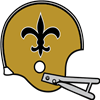
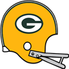

AFL Pro Bowl announced!The AFL Conference has announced their Pro Bowl squad for 1967.
QB Len Dawson - Chiefs (384/551, 4356 yds, 40 TD)
QB John Hadl - Chargers (290/457, 3780 yds, 38 TD)
RB Cannonball Butler - Raiders (189 att, 902 yds, 3 TD, 18 rec, 169 yds, 1 TD)
RB Darrell Price - Chargers (240 att, 1063 yds, 8 TD, 16 rec, 110 yds, 0 TD)
RB Donnie Stone - Broncos (211 att, 1067 yds, 9 TD, 42 rec, 191 yds, 0 TD)
FB Keith Lincoln - Chargers (42 att, 198 yds, 1 TD, 12 rec, 141 yds, 1 TD)
G Billy Shaw - Bills (67 Pancakes)
G Charlie Fowler - Bills (69 Pancakes)
T Doug Davis - Bills (87 Pancakes)
T Bob Brown - Raiders (103 Pancakes)
C Jim Otto - Raiders (54 Pancakes)
C Len Hauss - Broncos (56 Pancakes)
TE Tom Mitchell - Bills (34 rec, 699 yds, 8 TD)
TE Frank Simpson - Chiefs (77 rec, 955 yds, 7 TD)
WR Nicholas Salmon - Oilers (64 rec, 1224 yds, 14 TD)
WR Samuel Pitman - Patriots (77 rec, 1275 yds, 5 TD)
WR Art Powell - Bills (65 rec, 1295 yds, 9 TD)
WR Lance Alworth - Chargers (81 rec, 1679 yds, 17 TD)
WR Bob Scarpitto - Broncos (89 rec, 973 yds, 13 TD)
CB Jim Norton - Oilers (86 Tck, 3 Sck, 4 Int, 1 Def TD, 6 FF, 1 FR)
CB Willie West - Bills (48 Tck, 2 Int, 1 Def TD, 7 FF, 3 FR)
CB Al Nelson - Raiders (59 Tck, 3 Int, 1 Def TD, 1 FF, 1 FR)
LB Larry Grantham - Jets (92 Tck, 10 Sck, 3 FF)
LB Mike Stratton - Bills (103 Tck, 8 Sck, 3 FF, 2 FR)
LB Lee Roy Jordan - Raiders (95 Tck, 9 Sck, 2 FF)
LB Dan Conners - Raiders (86 Tck, 13 Sck)
DT Roger Brown - Oilers (28 Tck, 9 Sck, 3 FF, 1 FR)
DT Alan Page - Chargers (34 Tck, 8 Sck, 2 FF)
DE Jerry Mays - Jets (33 Tck, 13 Sck, 1 FF, 1 FR)
DE Jim Marshall - Raiders (32 Tck, 11 Sck, 3 FF, 2 FR)
FS Johnny Robinson - Chiefs (82 Tck, 1 Sck, 4 Int, 1 FF)
FS Ken Houston - Broncos (90 Tck, 1 Sck, 2 Int, 1 FR)
SS Jerry Logan - Patriots (62 Tck, 3 Sck, 3 FF, 1 FR)
SS Ed Sharockman - Bengals (84 Tck, 2 Sck, 1 Int, 1 Def TD, 2 FF, 1 FR)
K Bruce Gossett - Raiders (27/31 FG)
P Manuel Connolly - Chiefs (3859 yards, 28 inside 20)NFL Pro Bowl announced!The NFL Conference has announced their Pro Bowl squad for 1967.
QB King Hill - Eagles (255/419, 4413 yds, 40 TD)
QB Fran Tarkenton - Vikings (339/478, 3749 yds, 40 TD)
RB Wendell Hayes - Eagles (204 att, 854 yds, 4 TD, 39 rec, 516 yds, 2 TD)
RB John David Crow - Cardinals (236 att, 1039 yds, 8 TD, 66 rec, 437 yds, 1 TD)
RB Donny Anderson - Lions (246 att, 1005 yds, 13 TD, 17 rec, 256 yds, 0 TD)
FB Earl Gros - Packers (21 att, 92 yds, 5 TD)
G Pete Case - Eagles (79 Pancakes)
G Gene Upshaw - 49ers (83 Pancakes)
T Roy Skaggs - Eagles (95 Pancakes)
T Charlie Harper - 49ers (96 Pancakes)
C James Williams - Eagles (57 Pancakes)
C John Schmitt - Lions (59 Pancakes)
TE Billy Truax - Rams (54 rec, 546 yds, 4 TD)
TE John Mackey - 49ers (33 rec, 752 yds, 7 TD)
WR Hollis Talley - Steelers (72 rec, 1163 yds, 17 TD)
WR Carroll Dale - Rams (102 rec, 1414 yds, 9 TD)
WR Tom Hall - Lions (50 rec, 1165 yds, 11 TD)
WR Fred Biletnikoff - Lions (63 rec, 1455 yds, 16 TD)
WR Paul Warfield - Vikings (90 rec, 1431 yds, 20 TD)
CB Bob Howard - Eagles (78 Tck, 4 Int, 1 Def TD, 1 FF)
CB Mel Renfro - Browns (68 Tck, 2 Int, 1 Def TD, 4 FF, 1 FR)
CB Emmitt Thomas - 49ers (64 Tck, 8 Int)
LB Dave Wilcox - Redskins (123 Tck, 12 Sck, 2 FF)
LB Dick Butkus - 49ers (87 Tck, 11 Sck, 4 FF, 1 FR)
LB Andy Russell - Packers (134 Tck, 5 Sck, 2 Int, 1 Def TD, 1 FF)
LB Wayne Walker - Lions (99 Tck, 7 Sck, 3 FF, 3 FR)
DT Buck Buchanan - Cardinals (19 Tck, 6 Sck, 3 FF, 1 FR)
DT Jim Castle - Steelers (25 Tck, 8 Sck, 1 FF)
DE Deacon Jones - Rams (49 Tck, 9 Sck, 1 Sfty, 3 FF)
DE Verlon Biggs - Bears (21 Tck, 10 Sck, 2 FF, 1 FR)
FS Karl Kassulke - Eagles (79 Tck, 3 Sck, 2 Int, 1 FF, 2 FR)
FS Johnny Sample - Steelers (46 Tck, 6 Int, 3 Def TD, 1 FF)
SS Erich Barnes - Giants (72 Tck, 8 Sck, 2 FF, 1 FR)
SS Jim Steffen - 49ers (64 Tck, 6 Sck, 2 FF, 1 FR)
K Mike Clark - Packers (29/34 FG)
P Richard Wheeler - Steelers (3108 yards, 24 inside 20)QB Norm Snead (Oak) wins Playoff MVP! NEW YORK -- The Oakland Raiders' QB took home the 1967 Playoff MVP award today. Snead won the award by amassing playoff totals of 67/83, 734 yds, 6 TD. NEW YORK -- The Oakland Raiders' QB took home the 1967 Playoff MVP award today. Snead won the award by amassing playoff totals of 67/83, 734 yds, 6 TD.
QB Fran Tarkenton (Min) wins League MVP! NEW YORK -- The Minnesota Vikings' QB was a landslide winner Friday in balloting by a nationwide panel of 50 sports writers and broadcasters who cover the league. Tarkenton won the MVP award by amassing season totals of 339/478, 3749 yds, 40 TD. NEW YORK -- The Minnesota Vikings' QB was a landslide winner Friday in balloting by a nationwide panel of 50 sports writers and broadcasters who cover the league. Tarkenton won the MVP award by amassing season totals of 339/478, 3749 yds, 40 TD.
"I'm honored to receive this award because of the number of other worthy candidates who had some great years," Tarkenton said. "It was just fun for me, truly, to watch them. I'm just glad to be a part of it."
LB Dave Wilcox (Was) wins Defensive Player of the Year! NEW YORK -- In his own view, Dave Wilcox put together his best professional season in 1967. How appropriate, then, that he is the Wolverine Studios Sports Newtwork 1967 Defensive Player of the Year. NEW YORK -- In his own view, Dave Wilcox put together his best professional season in 1967. How appropriate, then, that he is the Wolverine Studios Sports Newtwork 1967 Defensive Player of the Year.
The versatile Wilcox had 123 tackles, 12 sacks, 0 interceptions, and 2 forced fumbles with 0 defensive touchdowns, and was a key to the Redskins' turnaround on defense. His role on the defense earned Wilcox a majority of votes Tuesday from a nationwide panel of 50 sports writers and broadcasters who cover the league.
LB Jim Lynch (Oak) wins Defensive Rookie of the Year!NEW YORK -- The Oakland Raiders' LB was a landslide winner Friday in balloting by a nationwide panel of 50 sports writers and broadcasters who cover the league. Lynch won the Rookie of the Year award by amassing season totals of 75 Tck, 7 Sck, 2 Int, 1 FF.QB Fran Tarkenton (Min) wins Offensive Player of the Year!Minnesota Vikings quarterback Fran Tarkenton is Wolverine Studios Sports Network's Offensive Player of the Year, as selected by a panel of players, coaches and executives.
Tarkenton received 299 first-place votes from the 583 people polled.
Tarkenton in 1967 had 3749 yards and 40 TDs, with only 7 interceptions for a QB Rating of 115.7.RB Floyd Little (NO) wins Offensive Rookie of the Year!NEW YORK -- The New Orleans Saints' RB was a landslide winner Friday in balloting by a nationwide panel of 50 sports writers and broadcasters who cover the league. Little won the Rookie of the Year award by amassing season totals of 236 att, 1120 yds, 5 TD, 35 rec, 342 yds, 2 TD.Boston Patriots re-signs Jerrod Tatum as Head Coach The Patriots have announced that they have given Jerrod Tatum a new contract. Tatum will continue to serve as Head Coach for 4 years earning 7.5 million pr year. The Patriots have announced that they have given Jerrod Tatum a new contract. Tatum will continue to serve as Head Coach for 4 years earning 7.5 million pr year.
Green Bay Packers re-signs Robert Thompson as Head CoachThe Packers have announced that they have given Robert Thompson a new contract. Thompson will continue to serve as Head Coach for 5 years earning 5.8 million pr year.Boston Patriots re-signs Timothy Popp as Defensive CoordinatorThe Patriots have announced that they have given Timothy Popp a new contract. Popp will continue to serve as Defensive Coordinator for 4 years earning 2 million pr year.Green Bay Packers re-signs Alvin Blythe as Defensive CoordinatorThe Packers have announced that they have given Alvin Blythe a new contract. Blythe will continue to serve as Defensive Coordinator for 3 years earning 1 million pr year.1967 Super BowlThe Oakland Raiders have defeated the Minnesota Vikings in the 1967 Super Bowl.
The final score was Vikings 16 - Raiders 20.
Bob Brown - T had a dominant game on offense playing a key part in the victory.
On defense Lee Roy Jordan - LB had a stellar outing helping seal the win.Minnesota Vikings re-signs Donald Chan as Head CoachThe Vikings have announced that they have given Donald Chan a new contract. Chan will continue to serve as Head Coach for 4 years earning 6.3 million pr year.NFL Championship GameThe Minnesota Vikings have defeated the Pittsburgh Steelers in the 1967 NFL Championship Game.
The final score was Vikings 24 - Steelers 21.
Fran Tarkenton - QB had a dominant game on offense playing a key part in the victory.
On defense Dave Costa - DT had a stellar outing helping seal the win.AFL Championship GameThe Oakland Raiders have defeated the Houston Oilers in the 1967 AFL Championship Game.
The final score was Raiders 24 - Oilers 19.
Nicholas Salmon - WR had a dominant game on offense even while his team lost.
On defense Jim Marshall - DE had a stellar outing helping seal the win.AFL Divisional Round The Houston Oilers have defeated the Kansas City Chiefs in the 1967 AFL Divisional Round. The Houston Oilers have defeated the Kansas City Chiefs in the 1967 AFL Divisional Round.
The final score was Oilers 35 - Chiefs 30.
John Brodie - QB had a dominant game on offense playing a key part in the victory.
On defense Jeff Smith - LB had a stellar outing helping seal the win.
AFL Divisional RoundThe Oakland Raiders have defeated the Buffalo Bills in the 1967 AFL Divisional Round.
The final score was Raiders 45 - Bills 6.
Bob Brown - T had a dominant game on offense playing a key part in the victory.
On defense Jim Marshall - DE had a stellar outing helping seal the win.NFL Divisional RoundThe Minnesota Vikings have defeated the San Francisco 49ers in the 1967 NFL Divisional Round.
The final score was Vikings 41 - 49ers 20.
Fran Tarkenton - QB had a dominant game on offense playing a key part in the victory.
On defense Sherrill Headrick - LB had a stellar outing helping seal the win.NFL Divisional Round The Pittsburgh Steelers have defeated the Philadelphia Eagles in the 1967 NFL Divisional Round. The Pittsburgh Steelers have defeated the Philadelphia Eagles in the 1967 NFL Divisional Round.
The final score was Steelers 27 - Eagles 24.
Hollis Talley - WR had a dominant game on offense playing a key part in the victory.
On defense Pat Holmes - DE had a stellar outing helping seal the win.
Green Bay Packers re-signs William Betz as Offensive CoordinatorThe Packers have announced that they have given William Betz a new contract. Betz will continue to serve as Offensive Coordinator for 6 years earning 4.1 million pr year.Week 15: RB Donny Anderson (Det) wins Offensive Player of the Week The honor comes after Anderson's 17 att, 144 yds, 1 TD, 4 rec, 102 yds, 0 TD performance against the Chicago Bears. Anderson from Texas Tech was selected in round 1, 1 years ago. The honor comes after Anderson's 17 att, 144 yds, 1 TD, 4 rec, 102 yds, 0 TD performance against the Chicago Bears. Anderson from Texas Tech was selected in round 1, 1 years ago.
Anderson now has 1005 Rushing Yards and 13 Touchdowns for the season.
Week 15: LB Andy Russell (GB) wins Defensive Player of the WeekLB Andy Russell of the Green Bay Packers has earned the Defensive Player of the Week award. Russell finished with 6 Tck, 1 Int, 1 Def TD, 1 FF.Game Recaps for Week 15Cardinals - 31, Eagles - 24
Giants - 15, Cowboys - 10
Vikings - 49, Saints - 20
Lions - 34, Bears - 28
Steelers - 9, Browns - 3
Rams - 33, 49ers - 17
Colts - 27, Redskins - 20
Packers - 37, Falcons - 13
Chiefs - 24, Bengals - 10
Raiders - 37, Chargers - 27
Bills - 45, Dolphins - 0
Patriots - 38, Jets - 20Game of the Week: St. Louis Cardinals at Philadelphia EaglesOur Expert Predictions:
Jeremy Piper : Philadelphia Eagles
In this game, I think a good bet is that The Eagles' offense goes through Pete Case - G. When he is at his best, the Eagles offense is like a well oiled machine. Expect a great game.
Mary Moore : St. Louis Cardinals
This is a high powered offense. They are 1st in the league pass completion percentage. They are 3rd in the league in sacks allowed. They are 3rd in the league rushing touchdowns with 16. They might even blow them out.
Jim Nox : Philadelphia Eagles
Head coach Johnathan Tran does a great job getting them prepared every week. This week will be no different.
Darren Francis : Philadelphia Eagles
Looking at how the teams match up, I agree with popular opinion that Karl Kassulke - FS can take over a game. Looking at the Eagles defense, it is clear that when he shows up, it is always entertaining.
Big boys shows the way in Philadelphia. The offensive line from Eagles are dirt rolling defenders this year. They’ve given up only 37 sacks in 13 games while collecting 518 pancakes. The offensive line from Eagles are dirt rolling defenders this year. They’ve given up only 37 sacks in 13 games while collecting 518 pancakes.
Coach Showdown with Simon Sly (Season 1967 Week 15)As always I am Simon Sly with your weekly coach comparison. This is an interesting week.
JEREMY OTERO, HEAD COACH, BUFFALO BILLS
The Bills currently sit at 7-6.
Jeremy Otero wants to be aggressive on both sides of the ball. He is serious and unrelenting, asserts his authority and has little tolerance for distractions.
Otero is slightly better than Thames at estimating player potential.
Otero has a slightly better grasp of coaching defense than Thames.
Otero is a better offisive mind than Thames.
Otero is not as rigid as Thames.
Otero makes his players hit the weight room more often than Thames.
KEITH THAMES, HEAD COACH, NEW ORLEANS SAINTS
The Saints currently sit at 1-12.
Keith Thames preaches flexibility on both offense and defense, focusing on what the situation demands. He adapts his demeanor to the situation, and does whatever he thinks it takes to get through to his players and co-workers.
Week 14: FS Johnny Sample (Pit) wins Defensive Player of the WeekFS Sample's ball hawking ability was on display in the Steelers 54-14 game with the St. Louis Cardinals. He finished with 7 Tck, 2 Int, 1 Def TD.
"Johnny has the unique ability to make plays and generate turnovers." -Steelers Defensive CoordinatorWeek 14: QB Fran Tarkenton (Min) wins Offensive Player of the WeekThe Minnesota Vikings' Fran Tarkenton threw 4 touchdowns, completing 31 of 36 passes for 364 yards in the Vikings victory over the Los Angeles Rams.
After being drafted in Round 0 of the 0 amateur draft, season number 6 for Tarkenton, has seen some impressive numbers including 37 touchdown passes this season.Game Recaps for Week 14Eagles - 38, Redskins - 35
Lions - 31, Packers - 17
Steelers - 54, Cardinals - 14
Giants - 24, Saints - 13
Browns - 30, Bears - 10
49ers - 30, Cowboys - 0
Vikings - 45, Rams - 13
Colts - 21, Falcons - 19
Raiders - 33, Bengals - 10
Oilers - 28, Jets - 24
Bills - 28, Patriots - 18
Chiefs - 38, Chargers - 31
Broncos - 24, Dolphins - 7Pittsburgh Steelers re-signs Joseph Conn as Head CoachThe Steelers have announced that they have given Joseph Conn a new contract. Conn will continue to serve as Head Coach for 3 years earning 6.5 million pr year.Minnesota Vikings re-signs Nicholas Johnson as Offensive CoordinatorThe Vikings have announced that they have given Nicholas Johnson a new contract. Johnson will continue to serve as Offensive Coordinator for 6 years earning 2.5 million pr year.Game of the Week: Minnesota Vikings at Los Angeles RamsOur Expert Predictions:
Jeremy Piper : Minnesota Vikings
They are on a win streak. They will continue that streak. They will win this game.
Mary Moore : Los Angeles Rams
They have a dominant defense. They do not get enough credit for that. They are 5th in run defense. Giving up only 87.2 yards per game. This may be a pivotal game for their season.
Jim Nox : Los Angeles Rams
Head coach Willie Morgan puts them over the top in this game.
Darren Francis : Los Angeles Rams
Eddie Meador - FS, Roman Gabriel - QB and Merlin Olsen - DT with their beautiful team play make the difference in this game.
Cincinnati Bengals pull off the upset! The Cincinnati Bengals have managed an unlikely win against New York Jets. The Cincinnati Bengals have managed an unlikely win against New York Jets.
The Jets appeared dejected towards the end of the game, while the Bengals kept their cool and drove the victory home. Most pundits had expected the Jets to win with ease, and the loss to such an inferior opponent is a tough blow to the lofty expectations for the program. Meanwhile, the Bengals fans were celebrating in the street, having had their hopes for the future bolstered at least momentarily.
Week 13: DE Jim Marshall (Oak) wins Defensive Player of the WeekDE Marshall absolutely dominated in the Raiders 34-15 game with the Kansas City Chiefs. He finished with 5 Tck, 3 Sck, 1 FF.Week 13: QB Fran Tarkenton (Min) wins Offensive Player of the WeekThe Minnesota Vikings' Fran Tarkenton threw 3 touchdowns, completing 19 of 28 passes for 313 yards in the Vikings victory over the Detroit Lions.
After being drafted in Round 0 of the 0 amateur draft, season number 6 for Tarkenton, has seen some impressive numbers including 33 touchdown passes this season.Game Recaps for Week 13Eagles - 30, Giants - 7
Vikings - 34, Lions - 10
Bears - 30, Saints - 9
Cardinals - 26, Browns - 13
Steelers - 31, Cowboys - 14
Redskins - 30, 49ers - 10
Rams - 39, Falcons - 14
Packers - 21, Colts - 13
Raiders - 34, Chiefs - 15
Bengals - 21, Jets - 14
Oilers - 55, Chargers - 31
Dolphins - 17, Bills - 10
Patriots - 31, Broncos - 24Boston Patriots re-signs Todd Hickman as Offensive CoordinatorThe Patriots have announced that they have given Todd Hickman a new contract. Hickman will continue to serve as Offensive Coordinator for 8 years earning 2 million pr year.Oakland Raiders re-signs Brian Clegg as Head CoachThe Raiders have announced that they have given Brian Clegg a new contract. Clegg will continue to serve as Head Coach for 5 years earning 3 million pr year.Game of the Week: Minnesota Vikings at Detroit LionsOur Expert Predictions:
Jeremy Piper : Minnesota Vikings
Head coach Donald Chan does a great job getting them prepared every week. This week will be no different. He is has a really good understanding of what works on defense.
Mary Moore : Minnesota Vikings
Looking at the teams, I am certain that Vikings got to love fielding an offense with Les Shy - RB. He will be critical this week, and is likely to be dominant.
Jim Nox : Detroit Lions
I think having a team players like Donny Anderson - RB is the kind of thing that will help the Lions win this game. You heard it here first.
Darren Francis : Detroit Lions
This will either be wildly entertaining or a dull grind. I see no middle between the two.
New Orleans Saints upset the Detroit Lions!With an outstanding effort the New Orleans Saints pull off the upset against Detroit Lions.
Everyone had expected the Detroit Lions to handle the New Orleans Saints with ease, but the Saints just wanted it more. This was really a must win game for the Lions, and the loss will surely put a dent in their confidence.Week 12: LB Dick Butkus (SF) wins Defensive Player of the Week LB Butkus absolutely dominated in the 49ers 34-29 game with the Baltimore Colts. He finished with 9 Tck, 2 Sck, 1 FF. LB Butkus absolutely dominated in the 49ers 34-29 game with the Baltimore Colts. He finished with 9 Tck, 2 Sck, 1 FF.
Week 12: RB Floyd Little (NO) wins Offensive Player of the WeekThe honor comes after Little's 17 att, 144 yds, 1 TD, 6 rec, 89 yds, 1 TD performance against the Detroit Lions. Little from Syracuse was selected in round 1, 0 years ago.
Little now has 875 Rushing Yards and 5 Touchdowns for the season.Freeman White responds to Irv Goode.Coaches have to be very happy that no one in the Redskins' locker room took the bait on mockery from Irv Goode after their recent game. Especially Steve DeLong is rumoured to have prevented any angry responses from more impulsive players. This should put immediate worries about loss of focus in the Redskins locker room to rest, and is a suitable display of professionality. Well done.Coach Showdown with Simon Sly (Season 1967 Week 13)Simon Sly is back with this week's edition of Coach Showdown. Let us get on with it.
WILLIAM BETZ, OFFENSIVE COORDINATOR, GREEN BAY PACKERS
The Packers currently sit at 6-5.
William Betz wants to be aggressive on offense. He loves football, and it shows that this is his dreamjob. His eagerness to discuss all aspects of the game is infectious in an organisation.
William Betz runs a run first Pro Style offense. He runs mostly from power formations. He prefers to use his fullbacks for blocking. It's about taking what the defense gives you in the passing game, according to Betz. The passing game is predicated on spreading the ball around to multiple targets.
They are 10th in the league pass completion percentage. They are 25th in the league passing touchdowns with 11. They are 20th in the league passing yards per game. Averaging 213.7.They are 13th in the league in sacks allowed.They are 15th in the league in pancakes.They are 24th in the league in passes of more than 20 yards.They are 22nd in the league average yards per rush.They are 13th in the league rushing touchdowns with 9.They are 13th in the league rushing yards per game. They average 98.They are 21st in the league points scored per game. With an average of 20.3.
Betz outperforms Vick in scouting.
Betz is slightly more detail oriented than Vick.
Betz is a better offisive mind than Vick.
JEFF VICK, OFFENSIVE COORDINATOR, SAN DIEGO CHARGERS
The Chargers currently sit at 6-5.
Jeff Vick runs his offense conservatively. Professionalism is the key for him. He demands accountability from everyone around him.
Jeff Vick runs a run first Power Hybrid offense. He runs mostly from power formations. He prefers to use his fullbacks for blocking. It's about taking what the defense gives you in the passing game, according to Vick.
They are 18th in the league pass completion percentage.
They are 5th in the league passing touchdowns with 30.
They are 7th in the league passing yards per game. Averaging 263.7.
They are 1st in the league in sacks allowed.
They are 5th in the league in pancakes.
They are 6th in the league in passes of more than 20 yards.
They are 2nd in the league average yards per rush.
They are 12th in the league rushing touchdowns with 10.
They are 1st in the league rushing yards per game. They average 151.8.
They are 5th in the league points scored per game. With an average of 29.3.
Vick is not as rigid as Betz.
Game Recaps for Week 12Steelers - 23, Redskins - 3
Falcons - 34, Cowboys - 31
Vikings - 19, Packers - 13
Rams - 20, Bears - 3
Cardinals - 28, Giants - 23
Saints - 45, Lions - 42
Eagles - 24, Browns - 20
49ers - 34, Colts - 29
Patriots - 26, Bills - 24
Raiders - 34, Dolphins - 7
Broncos - 44, Chargers - 40
Oilers - 27, Chiefs - 17Week 12: CB Vern Valdez (Oak) has suffered a major injury!The Oakland Raiders' CB Vern Valdez has suffered an injury: Out for the season.Oakland Raiders re-signs Francisco James as Offensive CoordinatorThe Raiders have announced that they have given Francisco James a new contract. James will continue to serve as Offensive Coordinator for 3 years earning 1 million pr year.Kansas City Chiefs re-signs James Bowman as Offensive Coordinator The Chiefs have announced that they have given James Bowman a new contract. Bowman will continue to serve as Offensive Coordinator for 4 years earning 2.5 million pr year. The Chiefs have announced that they have given James Bowman a new contract. Bowman will continue to serve as Offensive Coordinator for 4 years earning 2.5 million pr year.
Philadelphia Eagles re-signs Maurice Carter as Defensive CoordinatorThe Eagles have announced that they have given Maurice Carter a new contract. Carter will continue to serve as Defensive Coordinator for 4 years earning 2 million pr year.Game of the Week: Minnesota Vikings at Green Bay PackersOur Expert Predictions:
Jeremy Piper : Minnesota Vikings
This should be some good football.
Mary Moore : Minnesota Vikings
When you consider the two rosters, it is likely that Walter Johnson - DT will be a key figure in this game. Do not sleep on this guy's ability. There are so many factors to consider when making predictions. This one was easy though.
Jim Nox : Minnesota Vikings
Looking at the teams, it seems obvious that the key is whether they can contain Mick Tingelhoff - C. If not, he will destroy them. They might even blow them out.
Darren Francis : Green Bay Packers
Look for their offense to dominate. Get your popcorn ready.
Lions' Alex Karras has an opinion on who is the best DTDT Alex Karras sparked up a friendly rivalry with Ernie Stautner in an interview with local news. The Lions player remarks came in response to some online speculation about who was the better DT. 'I think I have proved what I am. I feel confident about where I am, but I think maybe Ernie Stautner has a little more he needs to prove, if you get me? At least if he want to be compared to me.', he said.Brown adds to Oilers' brandHouston benefits from community work by Oilers' DT Roger Brown. Brown recently has spend his free time working with troubled youth. An official statement on the matter read: 'Needless to say, the organization is proud of the Brown'.Week 11: QB Fran Tarkenton (Min) wins Offensive Player of the WeekThe Minnesota Vikings' Fran Tarkenton threw 4 touchdowns, completing 25 of 34 passes for 223 yards in the Vikings victory over the Baltimore Colts.
After being drafted in Round 0 of the 0 amateur draft, season number 6 for Tarkenton, has seen some impressive numbers including 29 touchdown passes this season.Freeman White shoots back at Irv Goode.Freeman White - TE welcomed a chance to reply to comments by Irv Goode after his team lost to St. Louis Cardinals. Freeman White - TE laughed off the comments of Irv Goode - G after the loss to Cardinals. Said the TE: 'That guy will say anything to get attention, everyone just ignores him'.Week 11: DT Buck Buchanan (StL) wins Defensive Player of the Week DT Buchanan absolutely dominated in the Lions 31-21 game with the St. Louis Cardinals. He finished with 4 Tck, 3 Sck, 1 FF. DT Buchanan absolutely dominated in the Lions 31-21 game with the St. Louis Cardinals. He finished with 4 Tck, 3 Sck, 1 FF.
Game Recaps for Week 11Giants - 20, Redskins - 16
Eagles - 24, Cowboys - 20
Vikings - 51, Colts - 0
Packers - 21, Steelers - 16
Lions - 31, Cardinals - 21
Browns - 21, Saints - 16
49ers - 26, Bears - 24
Rams - 31, Falcons - 21
Raiders - 38, Oilers - 26
Bills - 26, Broncos - 13
Jets - 40, Chiefs - 27
Chargers - 41, Dolphins - 10
Patriots - 24, Bengals - 21St. Louis Cardinals re-signs Charles Spain as Offensive CoordinatorThe Cardinals have announced that they have given Charles Spain a new contract. Spain will continue to serve as Offensive Coordinator for 3 years earning 2.5 million pr year.Detroit Lions re-signs Jerome Stevens as Defensive CoordinatorThe Lions have announced that they have given Jerome Stevens a new contract. Stevens will continue to serve as Defensive Coordinator for 4 years earning 1 million pr year.New York Giants re-signs Max Morales as Offensive Coordinator The Giants have announced that they have given Max Morales a new contract. Morales will continue to serve as Offensive Coordinator for 4 years earning 2 million pr year. The Giants have announced that they have given Max Morales a new contract. Morales will continue to serve as Offensive Coordinator for 4 years earning 2 million pr year.
Game of the Week: Detroit Lions at St. Louis CardinalsOur Expert Predictions:
Jeremy Piper : Detroit Lions
They will keep their winstreak going.
Mary Moore : St. Louis Cardinals
I think having a leader like Larry Wilson - CB is the kind of thing that will help the Cardinals win this game. A double digit win.
Jim Nox : St. Louis Cardinals
Head coach Ronald Forte runs a tight ship in St. Louis. I feel certain he has prepared an excellent gameplan. He is one of the best defensive minds.
Darren Francis : Detroit Lions
In the context of this game, it is likely that Alex Karras - DT will be a key player to watch. His paycheck is a good indication of the kind of player he is. But it will be much closer than many think..
San Francisco 49ers defense dominates!The 49ers' defense is lighting people up this season. In 9 games they’ve given up only 2402 total yards and 159 points. Mike Curtis - LB is the boss of the defense with 59 take downs on the year. Could the D be back in San Francisco?Dallas Cowboys pull off the upset! With an outstanding effort the Dallas Cowboys pull off the upset against Washington Redskins. With an outstanding effort the Dallas Cowboys pull off the upset against Washington Redskins.
Everyone had expected the Washington Redskins to handle the Dallas Cowboys with ease, but the Cowboys just wanted it more. This was really a must win game for the Redskins, and the loss will surely put a dent in their confidence.
War of words keeps escalating.Wally Hilgenberg keeps mocking Willie Wood in wake of the Packers' loss to Minnesota Vikings. To the chagrin of his coaches and teammates Wally Hilgenberg keeps taking the bait. The endless thrashtalking seems to have blood boiling in both locker rooms. 'This helps no one. Just play the game.' said an anonymous player in the Minnesota Vikings locker room.Coach Showdown with Simon Sly (Season 1967 Week 11)Welcome to Coach Showdown with me. I'm Simon Sly. This week features two interesting specimens.
ANTHONY DAVIS, OFFENSIVE COORDINATOR, DALLAS COWBOYS
The Cowboys currently sit at 2-7.
Anthony Davis runs his offense conservatively. He is serious and unrelenting, asserts his authority and has little tolerance for distractions.
Anthony Davis runs a pass heavy Pro Style Hybrid offense. His offense features a lot of outside runs. Davis likes to go over the top of the defense in the passing game. The passing game is predicated on spreading the ball around to multiple targets.
They are 26th in the league pass completion percentage. They are 24th in the league passing touchdowns with 9. They are 25th in the league passing yards per game. Averaging 183.7.They are 14th in the league in sacks allowed.They are 26th in the league in pancakes.They are 14th in the league in passes of more than 20 yards.They are 21st in the league average yards per rush.They are 25th in the league rushing touchdowns with 3.They are 21st in the league rushing yards per game. They average 80.1.They are 26th in the league points scored per game. With an average of 13.3.
Davis is not as rigid as Roark.
Davis takes much more command and is more respected by his players than Roark.
ROBERT ROARK, OFFENSIVE COORDINATOR, LOS ANGELES RAMS
The Rams currently sit at 4-5.
Robert Roark wants to be aggressive on offense. His attitude is relaxed, and he is good at making everyone around him feel comfortable and promotes a friendly and unceremonial atmosphere in the organisation.
Robert Roark runs a run first Vertical Hybrid offense. It features running backs out of the backfield in the passing game. Roark likes to go over the top of the defense in the passing game. He likes receivers who can stretch the field.
They are 8th in the league pass completion percentage.
They are 18th in the league passing touchdowns with 13.
They are 9th in the league passing yards per game. Averaging 250.2.
They are 6th in the league in sacks allowed.
They are 11th in the league in pancakes.
They are 11th in the league in passes of more than 20 yards.
They are 25th in the league average yards per rush.
They are 11th in the league rushing touchdowns with 8.
They are 17th in the league rushing yards per game. They average 84.9.
They are 18th in the league points scored per game. With an average of 21.1.
Roark is much more charismatic than Davis.
Roark is a better offisive mind than Davis.
Week 10: DT Roger Brown (Hou) wins Defensive Player of the WeekDT Roger Brown of the Houston Oilers has earned the Defensive Player of the Week award. Brown finished with 4 Tck, 3 Sck, 2 FF, 1 FR.Week 10: QB Terry Nofsinger (Pit) wins Offensive Player of the WeekThe Pittsburgh Steelers' Terry Nofsinger threw 7 touchdowns, completing 31 of 37 passes for 406 yards in the Steelers victory over the New Orleans Saints.
After being drafted in Round 0 of the 0 amateur draft, season number 6 for Nofsinger, has seen some impressive numbers including 18 touchdown passes this season.Game Recaps for Week 10Giants - 34, Colts - 10
Cowboys - 16, Redskins - 12
Vikings - 23, Cardinals - 17
Packers - 26, Browns - 14
Lions - 35, Bears - 13
Steelers - 51, Saints - 7
Rams - 30, Eagles - 27
49ers - 29, Falcons - 17
Chiefs - 41, Chargers - 26
Patriots - 10, Raiders - 7
Broncos - 38, Bengals - 17
Oilers - 34, Bills - 14
Dolphins - 20, Jets - 10Game of the Week: St. Louis Cardinals at Minnesota VikingsOur Expert Predictions:
Jeremy Piper : St. Louis Cardinals
Leadership. You cannot discount the difference it makes. I am thinking of a guy like Larry Wilson - CB. He will lead the way and help them win.
Mary Moore : St. Louis Cardinals
I see them winning again this week. They might even blow them out.
Jim Nox : Minnesota Vikings
This offense is likely to step up this week. They are 4th in the league pass completion percentage. They are 3rd in the league passing touchdowns with 22. They are 2nd in the league in sacks allowed. They are 3rd in the league average yards per rush. They are 2nd in the league rushing touchdowns with 11. They are 5th in the league rushing yards per game. They average 121! They are 1st in the league points scored per game. They average 34.1!
Darren Francis : St. Louis Cardinals
You have to think of the roles Willie Lanier - LB and John David Crow - RB play on this team. They are the players who make everyone work together as a team. Playing as a unit will ensure the Cardinals win these difficult games.
Willie Wood defends the Green Bay Packers.Willie Wood responded in an interview to the public gloating of Wally Hilgenberg after Minnesota Vikings won against the Packers. The words chosen by Packers about the character of Willie Wood - SS were harsh. The public spat between the two can be entertaining to the media and fans, but is sure to have coaches worried.Dawson stating his case to historyReports out of Kansas City tell us that Len Dawson - QB is among the favorites in his generation for the future hall of fame. Clearly, after 10 seasons in the league, playing at his level, it is hard to dispute. Hall of fame or not, Dawson is a legend, not only in Kansas City, but nationally. The Chiefs have made no comment on the subject before, but seem fairly satisfied with the whole thing.Sparks fly after Cardinals-Redskins game!No mincing of words from Irv Goode after the Cardinals beat the Redskins. 'That was a pretty poor showing on their part' said the Irv Goode - G Cardinals. Continuing with details about the Redskins's players missed tackles and lack of communication Goode did not hold back. He will surely have put off several Redskins fans, as well as people in his own front office.Week 9: LB Dale Meinert (Bal) wins Defensive Player of the Week LB Dale Meinert of the Baltimore Colts has earned the Defensive Player of the Week award. Meinert finished with 10 Tck, 1 Sck, 1 Int, 1 Def TD. LB Dale Meinert of the Baltimore Colts has earned the Defensive Player of the Week award. Meinert finished with 10 Tck, 1 Sck, 1 Int, 1 Def TD.
Week 9: RB John David Crow (StL) wins Offensive Player of the WeekThe honor comes after Crow's 25 att, 239 yds, 3 TD, 4 rec, 36 yds, 1 TD performance against the New Orleans Saints. Crow from Texas A&M was selected in round 0, 9 years ago.
Crow now has 760 Rushing Yards and 6 Touchdowns for the season.Game Recaps for Week 9Redskins - 35, Falcons - 7
Giants - 31, Steelers - 21
Eagles - 34, Cowboys - 31
Lions - 49, Browns - 10
Packers - 14, Bears - 13
Cardinals - 41, Saints - 23
Vikings - 23, 49ers - 21
Colts - 28, Rams - 23
Chiefs - 37, Patriots - 31
Broncos - 38, Jets - 28
Bills - 31, Raiders - 24
Oilers - 35, Dolphins - 24
Chargers - 31, Bengals - 16St. Louis Cardinals re-signs Nicholas Kinsey as Defensive CoordinatorThe Cardinals have announced that they have given Nicholas Kinsey a new contract. Kinsey will continue to serve as Defensive Coordinator for 4 years earning 1 million pr year.Detroit Lions re-signs Joan Mortensen as Offensive CoordinatorThe Lions have announced that they have given Joan Mortensen a new contract. Mortensen will continue to serve as Offensive Coordinator for 3 years earning 3 million pr year.New York Jets re-signs Charles Willis as Defensive Coordinator The Jets have announced that they have given Charles Willis a new contract. Willis will continue to serve as Defensive Coordinator for 6 years earning 2 million pr year. The Jets have announced that they have given Charles Willis a new contract. Willis will continue to serve as Defensive Coordinator for 6 years earning 2 million pr year.
Game of the Week: Minnesota Vikings at San Francisco 49ersOur Expert Predictions:
Jeremy Piper : Minnesota Vikings
Looking at the two rosters, I suspect that Billy Gambrell will be dominant here. The young WR is going to cause headaches for any defense. This week is no difference. We will be talking about this game for a long time.
Mary Moore : Minnesota Vikings
The difference in this game will be their offense. They are 2nd in the league passing touchdowns with 21. They are 2nd in the league in sacks allowed. They are 2nd in the league average yards per rush. They are 1st in the league rushing touchdowns with 10. They are 5th in the league rushing yards per game. They average 121! They are 1st in the league points scored per game. They average 35.7!
Jim Nox : Minnesota Vikings
For this game, my research indicates that Wally Hilgenberg - LB is likely to ruin the day for the offense.
Darren Francis : Minnesota Vikings
I find it hard to bet against coach Donald Chan. He always has them well prepared. He is running an explosive defense.
Chicago Bears Catch the Baltimore Colts by surprise! The Chicago Bears fans are celebrating after the Bears took down the Baltimore Colts. The Chicago Bears fans are celebrating after the Bears took down the Baltimore Colts.
In a fantastic effort the Bears brought home the win against a superior opponent. The supporters of the Bears are taking the victory as evidence that the team is only a couple of seasons away from being a top program, if they can keep progressing and developing their program.
Coach Showdown with Simon Sly (Season 1967 Week 9)Welcome to Coach Showdown with Simon Sly. I will spare you the meandering and cut to the chase.
TODD HICKMAN, OFFENSIVE COORDINATOR, BOSTON PATRIOTS
The Patriots currently sit at 3-4.
Todd Hickman runs his offense conservatively. He is a silent, strong leader. He does his job meticulously without making unnecessary waves, and expects those around him to do the same.
Todd Hickman runs a run first Power offense. He wants running backs who can also block. Hickman prefers running up the middle. It's about taking what the defense gives you in the passing game, according to Hickman. The passing game is predicated on spreading the ball around to multiple targets.
They are 22nd in the league pass completion percentage. They are 23rd in the league passing touchdowns with 8. They are 19th in the league passing yards per game. Averaging 221.9.They are 12th in the league in sacks allowed.They are 19th in the league in pancakes.They are 16th in the league in passes of more than 20 yards.They are 13th in the league average yards per rush.They are 23rd in the league rushing touchdowns with 3.They are 6th in the league rushing yards per game. They average 109.4.They are 19th in the league points scored per game. With an average of 19.7.
Hickman outperforms Davis in scouting.
Hickman is slightly more detail oriented than Davis.
Hickman is a better offisive mind than Davis.
Hickman is not as rigid as Davis.
ANTHONY DAVIS, OFFENSIVE COORDINATOR, DALLAS COWBOYS
The Cowboys currently sit at 1-6.
Anthony Davis runs his offense conservatively. He is serious and unrelenting, asserts his authority and has little tolerance for distractions.
Anthony Davis runs a pass heavy Pro Style Hybrid offense. His offense features a lot of outside runs. Davis likes to go over the top of the defense in the passing game. The passing game is predicated on spreading the ball around to multiple targets.
They are 26th in the league pass completion percentage.
They are 26th in the league passing touchdowns with 5.
They are 26th in the league passing yards per game. Averaging 166.6.
They are 14th in the league in sacks allowed.
They are 26th in the league in pancakes.
They are 18th in the league in passes of more than 20 yards.
They are 20th in the league average yards per rush.
They are 24th in the league rushing touchdowns with 2.
They are 21st in the league rushing yards per game. They average 79.3.
They are 26th in the league points scored per game. With an average of 10.4.
Davis takes much more command and is more respected by his players than Hickman.
Week 8: QB Len Dawson (KC) wins Offensive Player of the WeekThe Kansas City Chiefs' Len Dawson threw 5 touchdowns, completing 34 of 55 passes for 463 yards in the Chiefs victory over the Buffalo Bills.
After being drafted in Round 0 of the 0 amateur draft, season number 10 for Dawson, has seen some impressive numbers including 21 touchdown passes this season.Week 8: LB Johnny Baker (Buf) wins Defensive Player of the Week LB Johnny Baker of the Buffalo Bills has earned the Defensive Player of the Week award. Baker finished with 9 Tck, 2 Sck, 1 Int, 2 FF, 1 FR. LB Johnny Baker of the Buffalo Bills has earned the Defensive Player of the Week award. Baker finished with 9 Tck, 2 Sck, 1 Int, 2 FF, 1 FR.
Game Recaps for Week 8Eagles - 30, Redskins - 26
Giants - 27, 49ers - 20
Cowboys - 24, Saints - 17
Rams - 21, Packers - 7
Steelers - 40, Vikings - 38
Browns - 37, Cardinals - 20
Bears - 38, Colts - 24
Lions - 45, Falcons - 17
Jets - 34, Oilers - 31
Chiefs - 37, Bills - 31
Patriots - 19, Dolphins - 13
Broncos - 30, Chargers - 13
Raiders - 23, Bengals - 20Kansas City Chiefs re-signs Darrell Edmonds as Defensive CoordinatorThe Chiefs have announced that they have given Darrell Edmonds a new contract. Edmonds will continue to serve as Defensive Coordinator for 3 years earning 2.5 million pr year.Trade Alert The Dolphins trade Dave Daniels - DT and a Dolphins 1968 4th Round Pick to the Chiefs for Kenneth Marshall - DT. The Dolphins trade Dave Daniels - DT and a Dolphins 1968 4th Round Pick to the Chiefs for Kenneth Marshall - DT.
Trade AlertThe Oilers trade John Huarte - QB and a Oilers 1968 5th Round Pick to the Cowboys for Martin Justus - QB.Trade AlertThe Saints trade Dick Stafford - DE and a Saints 1968 5th Round Pick to the Bills for Ron Snidow - DE.Game of the Week: Minnesota Vikings at Pittsburgh SteelersOur Expert Predictions:
Jeremy Piper : Minnesota Vikings
A single digit win.
Mary Moore : Minnesota Vikings
For this game, you would be a fool not to see that Mick Tingelhoff - C will be a key player to watch. He always delivers a highlight reel.
Jim Nox : Minnesota Vikings
Look for them to continue their winstreak. The referees will have their work cut out for them. This will be very competitive and intense.
Darren Francis : Minnesota Vikings
Looking at the teams, I agree with the popular opinion that Wally Hilgenberg is going to have a field day. He is among the better LB's in the league. He will have a great day and be critical in this game.
Winning pleases everyone.Bills fans are celebrating this week after their team lit up the Broncos. Jeremy Otero said of his team, ‘We did what we were supposed to, and got what we came for.’Hilgenberg not pulling punches after the Vikings won.Wally Hilgenberg came out swinging in an interview after the Vikings beat the Packers. The Vikings LB made no efforts to hide his lack of respect for the Packers. 'I think this game proves where our team is, and that the Packers just are not at our level', he said.Week 7: QB Fran Tarkenton (Min) wins Offensive Player of the WeekThe Minnesota Vikings' Fran Tarkenton threw 5 touchdowns, completing 25 of 31 passes for 261 yards in the Vikings victory over the Cleveland Browns.
After being drafted in Round 0 of the 0 amateur draft, season number 6 for Tarkenton, has seen some impressive numbers including 20 touchdown passes this season.Week 7: CB Jim Norton (Hou) wins Defensive Player of the WeekCB Norton's ball hawking ability was on display in the Oilers 28-7 game with the Boston Patriots. He finished with 5 Tck, 1 Sck, 1 Int, 1 FF, 1 FR.
"Jim has the unique ability to make plays and generate turnovers." -Oilers Defensive CoordinatorGame Recaps for Week 749ers - 17, Lions - 13
Falcons - 23, Bears - 14
Cardinals - 22, Packers - 17
Eagles - 44, Steelers - 14
Redskins - 44, Saints - 27
Vikings - 35, Browns - 14
Rams - 38, Giants - 26
Colts - 33, Cowboys - 6
Jets - 38, Dolphins - 24
Bills - 28, Broncos - 27
Chiefs - 38, Raiders - 36
Chargers - 34, Bengals - 24
Oilers - 28, Patriots - 7Trade Alert The Chargers trade Paul Carmichael - RB and a Chargers 1968 7th Round Pick to the Lions for Hoyle Granger - RB. The Chargers trade Paul Carmichael - RB and a Chargers 1968 7th Round Pick to the Lions for Hoyle Granger - RB.
Trade AlertThe Chiefs trade Charley Long - G and a Chiefs 1968 4th Round Pick to the Falcons for Randy Beisler - G.Game of the Week: Minnesota Vikings at Cleveland BrownsOur Expert Predictions:
Jeremy Piper : Minnesota Vikings
You just have to look at their offense. They are 2nd in the league passing touchdowns with 15. They are 4th in the league passing yards per game. They average 278.4! They are 5th in the league in sacks allowed. They are 1st in the league rushing touchdowns with 7. They are 2nd in the league points scored per game. They average 35.4! A tough choice. I think it will be a close game.
Mary Moore : Minnesota Vikings
If they lose this one, I will never hear the end of it.
Jim Nox : Cleveland Browns
For this match up, I would argue that they will not be able to contain Jesse Whittenton - SS. He will destroy them.
Darren Francis : Cleveland Browns
They will keep their winstreak going.
Defense dominates in Houston.The Oilers defensive front is gashing opposing offenses so far this season with a total of 10 sacks, 2 forced fumbles and 61 tackles in 6 games.Atlanta Falcons upset the New York Giants! With an outstanding effort the Atlanta Falcons pull off the upset against New York Giants. With an outstanding effort the Atlanta Falcons pull off the upset against New York Giants.
Everyone had expected the New York Giants to handle the Atlanta Falcons with ease, but the Falcons just wanted it more. This was really a must win game for the Giants, and the loss will surely put a dent in their confidence.
Wade cementing his status.The Lions' front office has announced that the Lions are hoping to induct Billy Wade into their hall of fame - eventually. This has the characteristics of a media stunt, but Lions is undeniably a legend. Not just locally, but nationally.Coach Showdown with Simon Sly (Season 1967 Week 7)You know what time it is. It is time for your weekly coach comparison with Simon Sly. We have an odd couple for you this week.
EDWIN MARX, DEFENSIVE COORDINATOR, PITTSBURGH STEELERS
The Steelers currently sit at 5-0.
Edwin Marx wants to stay unpredictable on defense, favoring a balanced approach. He is serious and unrelenting, asserts his authority and has little tolerance for distractions.
Edwin Marx runs a 3-4 defense. The defense revolves around the linebackers. He prefers mixing up coverage. Marx aims to field versatile linebackers.
They are 8th in sacks with 17.
They are 4th in points allowed, averaging 16.4.
They are 12th in pass defense with 229.2 yards given up per game.
They are 3rd in run defense. Giving up 68.6 yards per game.
They are 16th in interceptions with 3.
They are 9th in the league in tackles for loss.
They are 23rd in forced fumbles.
Marx has a slightly better grasp of coaching defense than Roth.
EDWARD ROTH, DEFENSIVE COORDINATOR, NEW ORLEANS SAINTS
The Saints currently sit at 0-5.
Edward Roth does not like gambling on defense. Advocating a bend, but don't break mindset. He is serious and unrelenting, asserts his authority and has little tolerance for distractions.
Edward Roth runs a 5-2 defense. The scheme depends on dominating in the trenches. It features primarily zone coverage. He aims to shut down the passing game, making the opponent one dimensional. To fit his scheme, linebackers must be sure tacklers, who can help shut down the run.
They are 26th in sacks with 1.
They are 25th in points allowed, averaging 33.4.
They are 26th in pass defense with 347.8 yards given up per game.
They are 25th in run defense. Giving up 134.4 yards per game.
They are 23rd in interceptions with 1.
They are 16th in the league in tackles for loss.
They are 5th in forced fumbles.
Roth outperforms Marx in assessing player ability.
Roth is slightly better than Marx at estimating player potential.
Roth is better suited to lead a team than Marx.
Roth motivates his team a little better than Marx.
Roth prepares better than Marx.
Roth works with young players somewhat better than Marx.
Week 6: FS Johnny Sample (Pit) wins Defensive Player of the WeekFS Johnny Sample of the Pittsburgh Steelers has earned the Defensive Player of the Week award. Sample finished with 6 Tck, 1 Int, 1 Def TD, 1 FF.Week 6: QB Scott Lee (Buf) wins Offensive Player of the WeekThe Buffalo Bills' Scott Lee threw 4 touchdowns, completing 26 of 36 passes for 386 yards in the Bills victory over the Houston Oilers.
After being drafted in Round 3 of the 1963 amateur draft, season number 4 for Lee, has seen some impressive numbers including 15 touchdown passes this season.Game Recaps for Week 6Redskins - 31, Cowboys - 13
Eagles - 31, Colts - 27
Vikings - 37, Lions - 24
Packers - 34, Bears - 14
Steelers - 30, Cardinals - 15
Browns - 33, Saints - 30
49ers - 44, Rams - 7
Falcons - 34, Giants - 31
Chiefs - 27, Dolphins - 24
Jets - 14, Patriots - 13
Raiders - 24, Chargers - 21
Bills - 37, Oilers - 34
Broncos - 23, Bengals - 20Trade AlertThe Chargers trade Dick Kasperek - C and a Chargers 1968 5th Round Pick to the Bills for Frank Jackunas - C.Trade AlertThe Falcons trade Ray Rissmiller - T and a Falcons 1968 5th Round Pick to the Patriots for Joe Carollo - T.Trade AlertThe Eagles trade Bob Evans - DE and a Eagles 1968 7th Round Pick to the Giants for Bill Hull - DE.Trade AlertThe Giants trade Dick Pesonen - CB and a Giants 1968 3rd Round Pick to the Bears for Louis Guy - CB.Game of the Week: Pittsburgh Steelers at St. Louis CardinalsOur Expert Predictions:
Jeremy Piper : Pittsburgh Steelers
Head coach Joseph Conn does a great job getting them prepared every week. This week will be no different. He is a great offensive mind. And you can take that with you to the bank.
Mary Moore : Pittsburgh Steelers
You just have to look at their offense. They are 3rd in the league pass completion percentage. They are 4th in the league passing touchdowns with 11. They are 5th in the league passing yards per game. They average 283.5! They are 5th in the league points scored per game. They average 31.2! They win big.
Jim Nox : St. Louis Cardinals
For this game, the film shows that John David Crow - RB is the guy to watch, this man is pivotal to the Cardinals offense.
Darren Francis : St. Louis Cardinals
Leadership. You cannot discount the difference it makes. I am thinking of a guy like Larry Wilson - CB. He will lead the way and help them win.
Week 5: LB Lee Roy Jordan (Oak) wins Defensive Player of the WeekLB Lee Roy Jordan of the Oakland Raiders has earned the Defensive Player of the Week award. Jordan finished with 9 Tck, 2 Sck, 1 FF.Week 5: QB Scott Lee (Buf) wins Offensive Player of the WeekThe Buffalo Bills' Scott Lee threw 3 touchdowns, completing 20 of 31 passes for 414 yards in the Jets victory over the Buffalo Bills.
After being drafted in Round 3 of the 1963 amateur draft, season number 4 for Lee, has seen some impressive numbers including 11 touchdown passes this season.Game Recaps for Week 5Giants - 23, Redskins - 7
Packers - 28, 49ers - 25
Steelers - 29, Lions - 17
Vikings - 23, Bears - 20
Cardinals - 31, Saints - 0
Browns - 30, Cowboys - 17
Colts - 42, Rams - 10
Eagles - 37, Falcons - 13
Oilers - 51, Bengals - 31
Jets - 29, Bills - 24
Raiders - 21, Dolphins - 20
Chargers - 34, Patriots - 22
Broncos - 42, Chiefs - 32Game of the Week: Pittsburgh Steelers at Detroit LionsOur Expert Predictions:
Jeremy Piper : Pittsburgh Steelers
For this match up, a good bet is that Leroy Kelly - RB is a guy who will determine the result of the game. He supersharges their offense. I am really on the fence for this one, but I stand my prediction.
Mary Moore : Detroit Lions
Get your popcorn ready.
Jim Nox : Pittsburgh Steelers
I see them winning again this week.
Darren Francis : Pittsburgh Steelers
Head coach Joseph Conn puts them over the top in this game. He is doing some really smart things on offense.
Berry a Colts legendNews in Baltimore is that the Colts are hoping to induct Raymond Berry into their hall of fame - eventually. This has the characteristics of a media stunt, but Colts is undeniably a legend. Not just locally, but nationally.Coach Showdown with Simon Sly (Season 1967 Week 5)Welcome to Coach Showdown with Simon Sly. Let us jump right in.
NICHOLAS JOHNSON, OFFENSIVE COORDINATOR, MINNESOTA VIKINGS
The Vikings currently sit at 3-0.
Nicholas Johnson runs his offense conservatively. He is a silent, strong leader. He does his job meticulously without making unnecessary waves, and expects those around him to do the same.
Nicholas Johnson runs a pass heavy Spread offense. Johnson likes to go over the top of the defense in the passing game. The passing game is predicated on spreading the ball around to multiple targets.
They are 2nd in the league pass completion percentage. They are 2nd in the league passing touchdowns with 11. They are 4th in the league passing yards per game. Averaging 294.3.They are 3rd in the league in sacks allowed.They are 10th in the league in pancakes.They are 5th in the league in passes of more than 20 yards.They are 7th in the league average yards per rush.They are 7th in the league rushing touchdowns with 4.They are 6th in the league rushing yards per game. They average 119.3.They are 2nd in the league points scored per game. With an average of 39.
Johnson outperforms Mortensen in assessing player ability.
JOAN MORTENSEN, OFFENSIVE COORDINATOR, DETROIT LIONS
The Lions currently sit at 3-0.
Joan Mortensen wants to be aggressive on offense. He loves football, and it shows that this is his dreamjob. His eagerness to discuss all aspects of the game is infectious in an organisation.
Joan Mortensen runs a run first Power Hybrid offense. His offense features a dink and dunk approach, with short easy passes.
They are 25th in the league pass completion percentage.
They are 7th in the league passing touchdowns with 8.
They are 8th in the league passing yards per game. Averaging 282.3.
They are 20th in the league in sacks allowed.
They are 5th in the league in pancakes.
They are 2nd in the league in passes of more than 20 yards.
They are 13th in the league average yards per rush.
They are 11th in the league rushing touchdowns with 3.
They are 20th in the league rushing yards per game. They average 71.7.
They are 4th in the league points scored per game. With an average of 35.7.
Mortensen seems a little bit smarter than Johnson.
Mortensen makes his players hit the weight room more often than Johnson.
Week 4: CB John Douglas (Bos) wins Defensive Player of the WeekCB John Douglas of the Boston Patriots has earned the Defensive Player of the Week award. Douglas finished with 3 Tck, 1 Int, 1 Def TD, 1 FF, 1 FR.Week 4: QB King Hill (Phi) wins Offensive Player of the WeekThe Philadelphia Eagles' King Hill threw 7 touchdowns, completing 21 of 29 passes for 503 yards in the Eagles victory over the New Orleans Saints.
After being drafted in Round 0 of the 0 amateur draft, season number 9 for Hill, has seen some impressive numbers including 9 touchdown passes this season.Game Recaps for Week 4Redskins - 34, Rams - 13
Eagles - 56, Saints - 24
Browns - 31, Giants - 7
Cardinals - 36, Cowboys - 7
Vikings - 55, Falcons - 14
Lions - 44, Packers - 27
Steelers - 35, Bears - 9
49ers - 41, Colts - 21
Bills - 20, Bengals - 16
Patriots - 44, Chiefs - 20
Chargers - 41, Jets - 24
Raiders - 38, Broncos - 16
Dolphins - 31, Oilers - 17Trade Alert The Browns trade Dick Shiner - QB and a Browns 1968 7th Round Pick to the Chargers for Richard Parker - QB. The Browns trade Dick Shiner - QB and a Browns 1968 7th Round Pick to the Chargers for Richard Parker - QB.
Game of the Week: Boston Patriots at Kansas City ChiefsOur Expert Predictions:
Jeremy Piper : Kansas City Chiefs
Looking at how the teams match up, logic entails that Johnny Robinson - FS will ruin your day on offense.
Mary Moore : Boston Patriots
Head coach Jerrod Tatum has this team running like a well oiled machine. He is a great offensive mind.
Jim Nox : Kansas City Chiefs
I see them winning again this week.
Darren Francis : Boston Patriots
One of the most underestimated defenses. They are 4th in points allowed, averaging only 11. They are 1st in pass defense. They only give up 95 per game. They are 4th in forced fumbles. Just win baby.
Week 3: QB Fran Tarkenton (Min) wins Offensive Player of the WeekThe Minnesota Vikings' Fran Tarkenton threw 4 touchdowns, completing 24 of 34 passes for 267 yards in the Vikings victory over the Green Bay Packers.
After being drafted in Round 0 of the 0 amateur draft, season number 6 for Tarkenton, has seen some impressive numbers including 6 touchdown passes this season.Week 3: SS Tom Brown (NYG) wins Defensive Player of the WeekSS Brown's ball hawking ability was on display in the Giants 23-3 game with the Dallas Cowboys. He finished with 7 Tck, 3 Sck, 1 Int.
"Tom has the unique ability to make plays and generate turnovers." -Giants Defensive CoordinatorGame Recaps for Week 3Redskins - 24, Browns - 7
49ers - 38, Eagles - 17
Giants - 23, Cowboys - 3
Vikings - 45, Packers - 13
Cardinals - 44, Bears - 12
Steelers - 24, Saints - 21
Lions - 28, Rams - 21
Colts - 30, Falcons - 17
Bills - 34, Chargers - 10
Patriots - 27, Dolphins - 3
Raiders - 34, Jets - 6
Chiefs - 30, Bengals - 17
Broncos - 27, Oilers - 17Trade AlertThe Redskins trade Justin Henley - RB and a Redskins 1968 7th Round Pick to the Giants for Preston Pearson - RB.Game of the Week: Green Bay Packers at Minnesota VikingsOur Expert Predictions:
Jeremy Piper : Green Bay Packers
The way they win this game will tell a lot about what they are as a team.
Mary Moore : Green Bay Packers
I think having a team players like Andy Russell - LB is the kind of thing that will help the Packers win this game. We will be talking about this game for a long time.
Jim Nox : Green Bay Packers
Do not sleep on this defense. You heard it here first.
Darren Francis : Green Bay Packers
They are well coached. I am sure head coach Robert Thompson has them prepared for this game. A double digit win.
Coach Showdown with Simon Sly (Season 1967 Week 3)Simon Sly is here to bring you another edition of Coach Showdown. Let us get on with it.
MATTHEW HART, HEAD COACH, BALTIMORE COLTS
The Colts currently sit at 0-1.
Matthew Hart preaches flexibility on both offense and defense, focusing on what the situation demands. He adapts his demeanor to the situation, and does whatever he thinks it takes to get through to his players and co-workers.
Hart outperforms Clegg in scouting.
Hart is a better offisive mind than Clegg.
Hart makes his players hit the weight room more often than Clegg.
Hart prepares better than Clegg.
BRIAN CLEGG, HEAD COACH, OAKLAND RAIDERS
The Raiders currently sit at 1-0.
Brian Clegg wants to be aggressive on both sides of the ball. He is a silent, strong leader. He does his job meticulously without making unnecessary waves, and expects those around him to do the same.
Clegg is better suited to lead a team than Hart.
Clegg motivates his team a little better than Hart.
Week 2: LB Marvin Myrick (Chi) wins Defensive Player of the WeekLB Myrick absolutely dominated in the Vikings 17-2 game with the Chicago Bears. He finished with 5 Tck, 2 Sck, 1 Sfty, 1 FF.Week 2: QB Jim Hart (MIA) wins Offensive Player of the WeekThe league announced Miami Dolphins quarterback Jim Hart has been named Offensive Player of the Week.
The Dolphins defeated the Cincinnati Bengals, 20 to 10. Hart did his part, throwing 2 touchdowns, completing 22 of 33 passes for 369 yards. His outstanding performance now brings his season Touchdown to Interception Ratio to 2 to 0, and a passer rating of 124.4.Game Recaps for Week 2Giants - 27, Eagles - 14
Rams - 27, Cowboys - 3
Vikings - 17, Bears - 2
Lions - 35, Colts - 9
Cardinals - 52, Redskins - 0
Steelers - 37, Browns - 20
Packers - 23, Saints - 17
49ers - 22, Falcons - 6
Jets - 34, Bills - 27
Dolphins - 20, Bengals - 10
Chargers - 31, Oilers - 17
Chiefs - 7, Broncos - 6Trade AlertThe Chargers trade Jim Norton - DE and a Chargers 1968 4th Round Pick to the Chiefs for Moses Schaefer - DE.Game of the Week: Baltimore Colts at Detroit LionsOur Expert Predictions:
Jeremy Piper : Baltimore Colts
In this game, my view is that they will struggle with containing players like Bobby Boyd - CB. Expect him to show up in a big way.
Mary Moore : Baltimore Colts
The Colts are better than you think. They get the W. The referees will have their work cut out for them. This will be very competitive and intense.
Jim Nox : Baltimore Colts
This will be a tough game and that is where leaders such as Bobby Boyd - CB and Raymond Berry - WR will shine and help them get the win. This will be an action-packed affair.
Darren Francis : Detroit Lions
They play great together. Having a guy like Donny Anderson - RB on the field who understands what everyone needs to do and helping them play as a unit will help them a great deal in this game.
Week 1: QB Joe Namath (NYJ) wins Offensive Player of the WeekThe New York Jets' Joe Namath threw 3 touchdowns, completing 24 of 41 passes for 281 yards in the Jets victory over the Cincinnati Bengals.
After being drafted in Round 1 of the 1965 amateur draft, season number 2 for Namath, has seen some impressive numbers including 3 touchdown passes this season.Week 1: DE Jerry Mays (NYJ) wins Defensive Player of the WeekDE Jerry Mays of the New York Jets has earned the Defensive Player of the Week award. Mays finished with 2 Tck, 1 Sck.Game Recaps for Week 1Oilers - 19, Patriots - 6
Jets - 29, Bengals - 0
Raiders - 41, Broncos - 20Preseason Week 3: DT Julius Gomes (Den) has suffered a major injury! The Denver Broncos' DT Julius Gomes has suffered an injury: Out (8-12 weeks). The Denver Broncos' DT Julius Gomes has suffered an injury: Out (8-12 weeks).
Season PredictionsThe sports journalists association has published the results of this year's division prediction polls among their twenty top sports journalists.
NFL Capital: Dallas Cowboys with 12 votes (Runner up: Philadelphia Eagles with 4 votes)
NFL Century: St. Louis Cardinals with 10 votes (Runner up: Cleveland Browns with 6 votes)
NFL coastal: Baltimore Colts with 12 votes (Runner up: Los Angeles Rams with 6 votes)
NFL Central: Green Bay Packers with 11 votes (Runner up: Minnesota Vikings with 9 votes)
AFL East: Buffalo Bills with 10 votes (Runner up: Boston Patriots with 8 votes)
AFL West: Denver Broncos with 8 votes (Runner up: Kansas City Chiefs with 7 votes)Trade Alert The Rams trade Dick Bass - FB and a Rams 1968 5th Round Pick to the Vikings for Roland Jackson - FB. The Rams trade Dick Bass - FB and a Rams 1968 5th Round Pick to the Vikings for Roland Jackson - FB.
Game of the Week: Boston Patriots at Houston OilersOur Expert Predictions:
Jeremy Piper : Houston Oilers
I do not think their offense gets enough credit. It may come down to the wire though.
Mary Moore : Boston Patriots
I have a lot of respect for head coach Jerrod Tatum. He is doing great things in Boston. Offensively he is a great and innovative thinker. They greatly outscore them here.
Jim Nox : Boston Patriots
Their losing streak is misleading. They will win this week. It may come down to the wire though.
Darren Francis : Houston Oilers
For this match up, you would be a fool not to think Ken Willard will be a key factor from the RB position. He will have a great day and be critical in this game.
Denver Broncos fans are excited.News from the camp of Denver Broncos has it that Van Dyke, B. - G has been blowing the minds of coaches and fans. Van Dyke was expected to contribute early, but his development in camp has still been a pleasant surprise for everyone.San Diego Chargers fans are excited.News from the camp of San Diego Chargers has it that King, H. - SS has been blowing the minds of coaches and fans. King was expected to contribute early, but his development in camp has still been a pleasant surprise for everyone.A hidden gem?Wantland, H. - FS has turned some heads at the training facility of the Oakland Raiders. The undrafted rookie free agent has put together an astonishing training camp. Reports out of the camp suggest the coaches and fans are excited to see if he can continue his development.Buffalo Bills fans are excited.News from the camp of Buffalo Bills has it that Fowler, C. - G has been blowing the minds of coaches and fans. Fowler was expected to contribute early, but his development in camp has still been a pleasant surprise for everyone.Training Camp NewsMarchlewski, F. - C from Minnesota Vikings is living up to his round 2 selection by putting in an astonishing training camp. Reports out of the camp suggest the coaches and fans alike can't wait to see him on gameday.Training Camp highlightsIt looks like Detroit Lions hit the jackpot when they drafted Bass, M. - CB this year. Bass has delivered astonishing progress in trainingcamp. The sky is the ceiling for this kid!Future star for Green Bay Packers?Wright, W. - SS from Green Bay Packers has shown everyone at spring camp why they drafted him in round 2. Everyone, from coaches, to fans, to fellow players are gushing about the progress Wright has made.A hidden gem?Kelly, J. - T has turned some heads at the training facility of the Green Bay Packers. The undrafted rookie free agent has put together an astonishing training camp. Reports out of the camp suggest the coaches and fans are excited to see if he can continue his development.Training Camp NewsElkins, L. - WR from Green Bay Packers is living up to his round 3 selection by putting in an astonishing training camp. Reports out of the camp suggest the coaches and fans alike can't wait to see him on gameday.A hidden gem?Purvis, V. - FS has turned some heads at the training facility of the New York Giants. The undrafted rookie free agent has put together an astonishing training camp. Reports out of the camp suggest the coaches and fans are excited to see if he can continue his development.DT Willie Jones (N/A) has retired!DT Willie Jones (54 ovr) has retired after failing to get signed in free agency.Post Free Agency RetirementsThe following players have retired after going unsigned through free agency:
LB Jack Chapple
LB Ronnie Caveness
LB Bill Koman
LB Ronald SbrantiDE George Tarasovic (N/A) has retired!DE George Tarasovic (60 ovr) has retired after failing to get signed in free agency.Free Agency Round 10: Round Up45 players signed this week.
The biggest name signing this week was Del Shofner. The WR out of Baylor signed a $290,000 contract for 1 year(s) with Washington Redskins.
AFL East was the most active division with a total of 9 signings.
Miami Dolphins was the most active signing a total of 5 player(s).
The biggest spender was Washington Redskins who signed 3 player(s) for a total of $477,500.Free Agency Round 9: Round Up43 players signed this week.
The biggest name signing this week was Len Rohde. The T out of Utah State signed a $270,000 contract for 2 year(s) with Boston Patriots.
AFL West was the most active division with a total of 13 signings.
Denver Broncos was the most active signing a total of 5 player(s).
The biggest spender was Denver Broncos who signed 5 player(s) for a total of $332,500.Free Agency Round 8: Round Up43 players signed this week.
The biggest name signing this week was Jerry Tubbs. The LB out of Oklahoma signed a $350,000 contract for 1 year(s) with Cincinnati Bengals.
NFL Century was the most active division with a total of 11 signings.
New Orleans Saints was the most active signing a total of 5 player(s).
The biggest spender was Cincinnati Bengals who signed 5 player(s) for a total of $921,500.Free Agency Round 7: Round Up45 players signed this week.
The biggest name signing this week was Grady Alderman. The T out of Detroit Mercy signed a $410,000 contract for 2 year(s) with New Orleans Saints.
NFL Century was the most active division with a total of 17 signings.
New Orleans Saints was the most active signing a total of 13 player(s).
The biggest spender was New Orleans Saints who signed 13 player(s) for a total of $2,402,500.Free Agency Round 6: Round Up53 players signed this week.
The biggest name signing this week was Bradley Pickens. The C out of Illinois signed a $760,000 contract for 3 year(s) with New York Giants.
AFL West was the most active division with a total of 28 signings.
Cincinnati Bengals was the most active signing a total of 26 player(s).
The biggest spender was Cincinnati Bengals who signed 26 player(s) for a total of $4,047,500.RB Floyd Little (NO) goes #1 overall!NEW YORK -- The New Orleans Saints drafted Floyd Little #1 overall in the 1967 draft. The 5' 10" RB fits the team's needs perfectly. Said Saints general manager: "It's up to us to develop him and get good players around him."
"The great thing about the game of football is, it's a team game," Little said on a conference call. "I'm just going to be one piece of the puzzle."Moore and Nox Mock DraftPick 1: Washington Redskins
Larry Moore: Bob Griese - QB
Will deliver the ball to the target with nice accuracy. Has good zip on his throws. They gotta be happy to get this guy. Such a talent and he fits their needs. I would imagine the war room is celebrating when they make this pick.
Jim Nox: Lem Barney - CB
Let me reiterate: You cannot coach speed! He is going to make a lot of money over the years with that forty time. Quickly discerns the field, and where to go to to make a play. When the available talent fits what you need, there is reason to celebrate. They are getting a great talent who will serve them for many years.
Pick 2: St. Louis Cardinals
Larry Moore: Willie Lanier - LB
What you get with this kid, is a guy who understands that this is a team sport. Reliable tackler. This is a young man who has enough strength to shed blocks. Did I mention strength?. Great first step. Defensive Ends with this speed tend to go high. The obvious reason is that teams love to get this kind of immediate pressure off the edge. Do not be afraid to draft a position of need here. This kid is well worthy of a pick this early. Perfect situation for him, and great fit for the team.
Jim Nox: Willie Lanier - LB
If you ask around, everyone will tell you, this kid is all about the team. Consistently takes down ball carrier on tackles. Amazing strength for the position. Makes him versatile, and tells of his high ceiling. Rarely do we call defensive linemen sideline to sideline defenders, but this kid is so fast the term almost applies. Solid talent that fits their needs. Really that is all there is to it. Perfect situation. Take the money and run.
Pick 3: San Francisco 49ers
Larry Moore: Gene Upshaw - G
He is driven by the love of the sport. This is a young man who, in terms of strength, can go toe to toe with the biggest defensive linemen. He keeps amazing leverage in the running game, and is ready to take on top notch defensive linemen from day one. Pass blocking against professional players makes for a difficult transition from college. But the tape indicates he will do well in that regard. He fills a hole at the position. Blue-chip player. Will fit right in and start right away. Love it.
Jim Nox: Gene Upshaw - G
This is the kind of kid you want to promote the game. Well behaved, loves the game, and respectful. Amazing strength given his young age. This kid can bench press a minibus. Superb in the run game. Takes on defenders with tenacity and finishes his blocks. He can hold his own in the passing game. Will improve once he finetunes his technique, but he is already pretty good. They would be crazy not to take him here. A great fit, both in terms of what they need and the quality of player they get. This will put a smile on many faces.
Pick 4: San Diego Chargers
Larry Moore: Lem Barney - CB
What do you get with this kid? Speed, speed speed! Nice instincts. They would be crazy not to take him here. A great fit, both in terms of what they need and the quality of player they get. This will put a smile on many faces.
Jim Nox: Alan Page - DT
Coaches love the leadership skills in this kid. This kid is so fast. He might not go here, but this kind of speed will not stay long on the draft board. A good tackler. Good understanding of the game, and what is required of each position. When the available talent fits what you need, there is reason to celebrate. They are getting a great talent who will serve them for many years.
Pick 5: Cincinnati Bengals
Larry Moore: Ken Houston - FS
Amazing speed. This kid flies to the ball. Pretty good tackling fundamentals. That is something coaches love. Fast learner. It is all about fit here. Is there a guy at a position of need, worthy of a pick this high? The answer, obviously, is 'heck yeah'.
Jim Nox: Ken Houston - FS
Has the speed to allow his coaches to get creative with other players. This kid will hold his own. Coaches like how well he tackles. Very coachable. That is an important trait for a guy you want to draft this early. Fits the bill, great quality pick, and fills a soft spot on the roster. They should have no qualms here, run to the podium and get your man.
Pick 6: Philadelphia Eagles
Larry Moore: John Manns - QB
Respected for his good behavior on the field. The guy has gets along with everyone. He is smart enough to get the ins and outs of the pro game. Will make tight throws. They should not be afraid to fill a need here. He will start day one. Quality pick right here.
Jim Nox: Jim Lynch - LB
Sportsmanship, love of the sport and respect, is what you get with him. He takes care of his teammates. Most everyone who ever played with him, counts him as their friend. Wraps up tackles well. Can bull rush smaller Tight Ends and Fullbacks when blitzing. Coaches love this kind on their Linebackers. You better have some athletic offensive linemen if you hope to block this kid. Lightning fast first step and amazing closing speed. he will be a terror for Quarterbacks for years to come. Fans might not be on board with what can be framed as a need pick. But trust me once they see this kid play, they will be more than happy.
Pick 7: Oakland Raiders
Larry Moore: Jim Lynch - LB
Respected for his good behavior on the field. Known among his teammates as a bit of a goofball, but never in a bad way. The kind that keeps spirits high even when a season goes south. Consistently takes down ball carrier on tackles. Can bull rush smaller Tight Ends and Fullbacks when blitzing. Coaches love this kind on their Linebackers. Deceptively fast, will make you dizzy with his speed rush. Do not be afraid to draft a position of need here. This kid is well worthy of a pick this early. Perfect situation for him, and great fit for the team.
Jim Nox: George Webster - LB
Scouts like how well he tackles. Really strong for a Linebacker. This is something that teams love. Will not have a hard time digesting a pro playbook. They will be happy to get him, they could use an upgrade at the position, and he certainly fits the bill. A franchise caliber player. Just what they have been looking for.
Pick 8: New York Jets
Larry Moore: Alan Page - DT
Every team would benefit from his leadership. He has the speed to move outside. Love that versatility, it give the defense a lot of options. He will be a headache to offensive coordinators. He has a well developed tackling technique. A cerebral player. He will get a great chance to earn the starting job. He fits what they are looking for. He is a solid player. Cannot go wrong here.
Jim Nox: Pete Barnes - LB
I want this kid on my team. He understands his role on the field, and how it fits in with what everyone else is doing. Can bull rush smaller Tight Ends and Fullbacks when blitzing. Coaches love this kind on their Linebackers. He is sharp, and that makes him very coachable. They need playmakers at this position. This is what they are getting here. Solid pick.
Pick 9: New York Giants
Larry Moore: George Webster - LB
Scouts like how well he tackles. The expectation is that his strength will translate into fumbles. It will definitely help him shed blocks and produce big hits. Educated well. Shows good understanding of the game. He fills a need for them. Great pick here.
Jim Nox: Rick Volk - FS
He is faster than his tape shows. No need to worry about his speed. Takes in instructions well. It is not often that the talent available fits perfectly with what you need. When it does, it makes for a win-win situation. This young man is going to be put in a position to succeed.
Pick 10: Minnesota Vikings
Larry Moore: Jack Gregory - DE
This guy is pure muscle. Pure muscle is good. Coaches love how coachable he is. Some might say this is a 'need' pick, but we must remember, this is a really good player as well. He will contribute early and often. No losers here.
Jim Nox: Jack Gregory - DE
Love his strength. He can play everywhere on the line. It is no coincidence he has attracted a lot of attention. His college teammates all point to how smart he is. This guy is available. This guy fills a need. They have to take him. It makes so much sense.
Free Agency Round 3: Round Up2 players signed this week.
The biggest name signing this week was Jesse Whittenton. The SS out of Texas-El Paso signed a $820,000 contract for 1 year(s) with Cleveland Browns.
NFL Century was the most active division with a total of 1 signings.
Cleveland Browns was the most active signing a total of 1 player(s).
The biggest spender was Cleveland Browns who signed 1 player(s) for a total of $820,000.SS Jesse Whittenton (Cle) signs large free agent deal!NEW YORK -- Anxious all week, SS Jesse Whittenton was finally catching some sleep at home in Charlotte, N.C., when he found out just how serious the Cleveland Browns were about acquiring him.
The free-agent signing period had just begun, and Whittenton's agent called to tell him that the Browns head coach was in town. Soon, Whittenton was meeting him at an executive airport.
Now, Whittenton is being fitted for a Browns uniform.
One of the league's top SSs and top free-agent prize agreed Friday to a 1 year contract worth $820,000.
"It's one thing to play football in this league and make a living, but it's a totally different thing to come to a place with a rich tradition like the Browns," Whittenton said.Free Agency Round 2: Round Up2 players signed this week.
The biggest name signing this week was Ed Brown. The QB out of San Francisco signed a $950,000 contract for 1 year(s) with New Orleans Saints.
NFL Century was the most active division with a total of 1 signings.
New Orleans Saints was the most active signing a total of 1 player(s).
The biggest spender was New Orleans Saints who signed 1 player(s) for a total of $950,000.QB Ed Brown (NO) signs large free agent deal!NEW YORK -- Ed Brown, one of the league's top QBs and top free-agent prize agreed to a 1 year contract worth $950,000 to play for the New Orleans Saints.Free Agency Round 1: Round Up8 players signed this week.
The biggest name signing this week was Jim Ringo. The C out of Syracuse signed a $1,000,000 contract for 1 year(s) with Cincinnati Bengals.
NFL Century was the most active division with a total of 3 signings.
Pittsburgh Steelers was the most active signing a total of 2 player(s).
The biggest spender was Pittsburgh Steelers who signed 2 player(s) for a total of $1,470,000.DT Ernie Stautner (Pit) signs large free agent deal!NEW YORK -- Ernie Stautner, one of the league's top DTs and top free-agent prize agreed to a 1 year contract worth $850,000 to play for the Pittsburgh Steelers.DE Earl Faison (Chi) signs large free agent deal!NEW YORK -- Anxious all week, DE Earl Faison was finally catching some sleep at home in Charlotte, N.C., when he found out just how serious the Chicago Bears were about acquiring him.
The free-agent signing period had just begun, and Faison's agent called to tell him that the Bears head coach was in town. Soon, Faison was meeting him at an executive airport.
Now, Faison is being fitted for a Bears uniform.
One of the league's top DEs and top free-agent prize agreed Friday to a 2 year contract worth $940,000.
"It's one thing to play football in this league and make a living, but it's a totally different thing to come to a place with a rich tradition like the Bears," Faison said.G Jerry Kramer (GB) signs large free agent deal!NEW YORK -- Anxious all week, G Jerry Kramer was finally catching some sleep at home in Charlotte, N.C., when he found out just how serious the Green Bay Packers were about acquiring him.
The free-agent signing period had just begun, and Kramer's agent called to tell him that the Packers head coach was in town. Soon, Kramer was meeting him at an executive airport.
Now, Kramer is being fitted for a Packers uniform.
One of the league's top Gs and top free-agent prize agreed Friday to a 2 year contract worth $1,000,000.
"It's one thing to play football in this league and make a living, but it's a totally different thing to come to a place with a rich tradition like the Packers," Kramer said.C Jim Ringo (CIN) signs large free agent deal!NEW YORK -- Anxious all week, C Jim Ringo was finally catching some sleep at home in Charlotte, N.C., when he found out just how serious the Cincinnati Bengals were about acquiring him.
The free-agent signing period had just begun, and Ringo's agent called to tell him that the Bengals head coach was in town. Soon, Ringo was meeting him at an executive airport.
Now, Ringo is being fitted for a Bengals uniform.
One of the league's top Cs and top free-agent prize agreed Friday to a 1 year contract worth $1,000,000.
"It's one thing to play football in this league and make a living, but it's a totally different thing to come to a place with a rich tradition like the Bengals," Ringo said.Offseason Team Needs with Jeremy PiperWith a new offseason under way, some rosters are in good shape. However, other teams have big needs to address this offseason. Your always trusty Jeremy Piper here brings you a quick glance at the teams with work to do. Whether they fill their needs in the draft or with veterans in free agency remains to be seen.
Here we go:
Dallas Cowboys: T WR LB
New York Giants: QB WR LB FS
Washington Redskins: QB C WR CB DT FS SS
Philadelphia Eagles: QB TE LB DT DE
Cleveland Browns: QB C TE LB DT DE SS
St. Louis Cardinals: WR CB LB DT DE
New Orleans Saints: QB RB G T C TE WR CB LB DT DE FS SS
Pittsburgh Steelers: G T WR LB DE SS
Baltimore Colts: QB G T WR CB LB DT DE
Los Angeles Rams: WR LB FS
San Francisco 49ers: G CB SS
Atlanta Falcons: QB RB G T C WR CB LB SS
Green Bay Packers: QB G T WR FS SS
Chicago Bears: QB RB T WR CB LB DE SS
Detroit Lions: QB T WR CB LB DE SS
Minnesota Vikings: WR DE SS
New York Jets: QB TE LB DT SS
Houston Oilers: QB G T WR CB DT
Miami Dolphins: G T TE WR CB LB DT DE
Boston Patriots: CB LB
Buffalo Bills: RB WR LB DT FS SS
Oakland Raiders: CB LB DE
Kansas City Chiefs: C WR CB LB DT
San Diego Chargers: CB DT DE SS
Denver Broncos: RB WR LB DE
Cincinnati Bengals: QB RB G T C TE WR CB LB DT DE FS SS
New York Jets announce new staff.Michael Arndt will be serving as the new General Manager for the Jets . He will get a 4 year contract worth 2.7 million pr year with the Jets.San Diego Chargers announce new staff.Chargers revealed that they have signed Jeff Vick as their new Offensive Coordinator. He will get a 5 year contract worth 1 million pr year with the Chargers.
It was also revealed that Faustino Ross will be serving as the new General Manager for the Chargers . He will get a 1 year contract worth 3.6 million pr year with the Chargers.New Orleans Saints announce new staff.Saints revealed that they have signed Brian Lashley as their new Offensive Coordinator. He will get a 3 year contract worth 0.5 million pr year with the Saints.Pittsburgh Steelers announce new staff.Darin Jernigan will be serving as the new General Manager for the Steelers . He will get a 2 year contract worth 3.8 million pr year with the Steelers.Baltimore Colts announce new staff.Eric Peterson will be serving as the new General Manager for the Colts . He will get a 2 year contract worth 4.9 million pr year with the Colts.San Francisco 49ers announce new staff.49ers revealed that they have signed Xavier Doolittle as their new Offensive Coordinator. He will get a 5 year contract worth 2 million pr year with the 49ers.Atlanta Falcons announce new staff.Falcons revealed that they have signed Robert Loyd as their new Offensive Coordinator. He will get a 4 year contract worth 1.5 million pr year with the Falcons.Green Bay Packers announce new staff.James Steed will be serving as the new General Manager for the Packers . He will get a 2 year contract worth 2.9 million pr year with the Packers.Chicago Bears announce new staff.Bears revealed that they have signed Robert Castro as their new Offensive Coordinator. He will get a 4 year contract worth 2 million pr year with the Bears.
Other news included that Bears have signed Jeremy Bryson as their new Defensive Coordinator. Bryson will get a 3 year contract worth 2 million pr year with the Bears.Minnesota Vikings announce new staff.Richard Dalton will be serving as the new General Manager for the Vikings . He will get a 4 year contract worth 4 million pr year with the Vikings.Washington Redskins announce new staff.Redskins revealed that they have signed Robert Wilder as their new Offensive Coordinator. He will get a 4 year contract worth 0.5 million pr year with the Redskins.New York Giants announce new staff.Robert Schofield will be serving as the new General Manager for the Giants . He will get a 3 year contract worth 3.7 million pr year with the Giants.Dallas Cowboys announce new staff.Cowboys have signed Anthony Brady as their new Defensive Coordinator. Brady will get a 2 year contract worth 1.5 million pr year with the Cowboys.Denver Broncos hire Willie Luong away from the San Diego ChargersThe Broncos have announced that they have signed Willie Luong as their new Head Coach. Luong was previously working for Chargers as Offensive Coordinator. He will get a 2 year contract worth 5.8 million pr year with the Broncos.Miami Dolphins hire Alexander Wilson away from the New Orleans SaintsThe Dolphins have announced that they have signed Alexander Wilson as their new Head Coach. Wilson was previously working for Saints as Offensive Coordinator. He will get a 3 year contract worth 6 million pr year with the Dolphins.Los Angeles Rams hire Willie Morgan away from the Washington RedskinsThe Rams have announced that they have signed Willie Morgan as their new Head Coach. Morgan was previously working for Redskins as Offensive Coordinator. He will get a 4 year contract worth 6 million pr year with the Rams.New York Giants hire James Bush away from the Dallas CowboysThe Giants have announced that they have signed James Bush as their new Head Coach. Bush was previously working for Cowboys as Defensive Coordinator. He will get a 4 year contract worth 6.3 million pr year with the Giants.Draft Order: Washington Redskins own first overall.Pick 1: Washington Redskins
Pick 2: St. Louis Cardinals
Pick 3: San Francisco 49ers
Pick 4: San Diego Chargers
Pick 5: Cincinnati Bengals
Pick 6: Philadelphia Eagles
Pick 7: Oakland Raiders
Pick 8: New York Jets
Pick 9: New York Giants
Pick 10: Minnesota Vikings
Pick 11: Miami Dolphins
Pick 12: Los Angeles Rams
Pick 13: New Orleans Saints
Pick 14: Detroit Lions
Pick 15: Denver Broncos
Pick 16: Dallas Cowboys
Pick 17: Cleveland Browns
Pick 18: Chicago Bears
Pick 19: Buffalo Bills
Pick 20: Boston Patriots
Pick 21: Baltimore Colts
Pick 22: Atlanta Falcons
Pick 23: Pittsburgh Steelers
Pick 24: Houston Oilers
Pick 25: Kansas City Chiefs
Pick 26: Green Bay Packers
Coaching Carousel Predictions.The offseason is upon us and that means teams are shaking up their coaching staffs. This means that we get to take our annual look at coordinators who could make the leap to become head coaches, and the teams who are likely to poach them.
The prime candidates identified by our experts are:
Nicholas Kinsey - Defensive Coordinator - St. Louis Cardinals
William Betz - Offensive Coordinator - Green Bay Packers
Luke Nelson - Defensive Coordinator - New York Giants
Jerome Stevens - Defensive Coordinator - Detroit Lions
Theodore Dwyer - Offensive Coordinator - Buffalo Bills
Francisco James - Offensive Coordinator - Oakland Raiders
James Bush - Defensive Coordinator - Dallas Cowboys
Alfonso Hutcheson - Defensive Coordinator - Washington Redskins
Willie Morgan - Offensive Coordinator - Washington Redskins
Alvin Blythe - Defensive Coordinator - Green Bay Packers
As always, we are prone to wild speculations, so we asked our in-house experts to do a little matchmaking between candidates and teams. Here is what they came up with:
Mary Moore:
William Betz leaves the Packers to become the head coach for the Denver Broncos.
Darren Francis:
I think the Cardinals lose Nicholas Kinsey and I see him heading to Denver Broncos.
Jim Nox:
The Cardinals cannot hold on to Nicholas Kinsey. I would like to see him coach the Los Angeles Rams.
Jeremy Piper:
Willie Morgan is certainly on the move. That means Redskins will need a new coordinator. As for where Morgan ends up? Well, I think Denver Broncos is a good bet.Contract UpdatesThe following players have unlocked bonuses in their contracts based on their performance last season:
Lee Folkins - TE (Dallas Cowboys) unlocked a 10% bonus for Catches (Target: 40 / Accomplished: 66).
Dick Pesonen - CB (New York Giants) unlocked a 10% bonus for Games Started (Target: 8 / Accomplished: 10).
Riley Gunnels - DT (Philadelphia Eagles) unlocked a 10% bonus for Games Started (Target: 7 / Accomplished: 14).
Adolph Smith - QB (Philadelphia Eagles) unlocked a 10% bonus for Completion % (Target: 50 / Accomplished: 50).
Dick Johnson - WR (Cleveland Browns) unlocked a 10% bonus for Catches (Target: 40 / Accomplished: 70).
Earl Morrall - QB (St. Louis Cardinals) unlocked a 5% bonus for Games Started (Target: 8 / Accomplished: 11).
Justin Canale - G (Pittsburgh Steelers) unlocked a 10% bonus for Pancakes (Target: 20 / Accomplished: 28).
Dan Sullivan - G (Baltimore Colts) unlocked a 5% bonus for Games Started (Target: 7 / Accomplished: 14).
Jim Colvin - DT (Baltimore Colts) unlocked a 5% bonus for Games Started (Target: 7 / Accomplished: 7).
Ray Mansfield - C (Baltimore Colts) unlocked a 5% bonus for Games Started (Target: 8 / Accomplished: 14).
Tom Matte - RB (Baltimore Colts) unlocked a 10% bonus for Rushing Attempts (Target: 150 / Accomplished: 211).
Clark Miller - DE (San Francisco 49ers) unlocked a 5% bonus for Games Started (Target: 7 / Accomplished: 14).
Fred Miller - DT (Green Bay Packers) unlocked a 5% bonus for winning the championship.
Ben McGee - DE (Green Bay Packers) unlocked a 5% bonus for winning the championship.
Jerry Fowler - T (Green Bay Packers) unlocked a 5% bonus for Pancakes (Target: 20 / Accomplished: 26).
John Schmitt - C (Detroit Lions) unlocked a 10% bonus for Pancakes (Target: 20 / Accomplished: 57).
Larry Benz - FS (Minnesota Vikings) unlocked a 10% bonus for Tackles (Target: 40 / Accomplished: 47).
Lionel Aldridge - DE (Minnesota Vikings) unlocked a 5% bonus for Sacks (Target: 5 / Accomplished: 5).
Wally Hilgenberg - LB (Minnesota Vikings) unlocked a 10% bonus for Games Started (Target: 7 / Accomplished: 14).
Kyle Paige - T (Houston Oilers) unlocked a 10% bonus for Games Started (Target: 7 / Accomplished: 14).
John Ingram - G (Houston Oilers) unlocked a 10% bonus for Pancakes (Target: 20 / Accomplished: 54).
Nick Buoniconti - LB (Boston Patriots) unlocked a 5% bonus for Sacks (Target: 5 / Accomplished: 5).
Don Webb - CB (Boston Patriots) unlocked a 10% bonus for Games Started (Target: 7 / Accomplished: 14).
Jake Kupp - G (Boston Patriots) unlocked a 5% bonus for Pancakes (Target: 20 / Accomplished: 38).
Robert Ryder - G (Buffalo Bills) unlocked a 5% bonus for Pancakes (Target: 20 / Accomplished: 57).
Frank Jackunas - C (Buffalo Bills) unlocked a 10% bonus for Games Started (Target: 8 / Accomplished: 11).
Marv Fleming - TE (Oakland Raiders) unlocked a 5% bonus for Games Started (Target: 8 / Accomplished: 14).
J.D. Garrett - RB (Kansas City Chiefs) unlocked a 10% bonus for Rushing TDs (Target: 5 / Accomplished: 7).
Charley Long - G (Kansas City Chiefs) unlocked a 10% bonus for Pancakes (Target: 20 / Accomplished: 24).
Lance Alworth - WR (San Diego Chargers) unlocked a 10% bonus for Catches (Target: 40 / Accomplished: 70).
Forrest Frantz - CB (Denver Broncos) unlocked a 5% bonus for Tackles (Target: 40 / Accomplished: 40).
To John Sutro - T, the past is the past.John Sutro is a great story, having worked his way out of a troubled youth. To many, Sutro is becoming a posterboy for the league's ability to help talented young men rehabilitate themselves through sports.Other retirements
QB Mike Taliaferro (65 ovr) : Career stats: 0/0, 0 yds, 0 TD
QB Frank Womack (65 ovr) : Career stats: 0/0, 0 yds, 0 TD
QB Dennis Claridge (64 ovr) : Career stats: 0/0, 0 yds, 0 TD
QB Lamar McHan (61 ovr) : Career stats: 42/78, 439 yds, 3 TD
QB Dick Wood (56 ovr) : Career stats: 0/0, 0 yds, 0 TD
QB Tom Kennedy (54 ovr) : Career stats: 0/0, 0 yds, 0 TD
QB Jerry Rhome (54 ovr) : Career stats: 0/0, 0 yds, 0 TD
QB George Mira (54 ovr) : Career stats: 0/0, 0 yds, 0 TD
QB Steve Tensi (52 ovr) : Career stats: 0/0, 0 yds, 0 TD
RB Charlie Bryant (71 ovr) : Career stats: 0 att, 0 yds, 0 TD
RB Gerry Allen (64 ovr) : Career stats: 0 att, 0 yds, 0 TD
RB Roy Shivers (64 ovr) : Career stats: 0 att, 0 yds, 0 TD
RB Gene Thomas (63 ovr) : Career stats: 0 att, 0 yds, 0 TD
RB Smith Reed (63 ovr) : Career stats: 0 att, 0 yds, 0 TD
RB Bob Daugherty (62 ovr) : Career stats: 0 att, 0 yds, 0 TD
RB Buddy Portillo (61 ovr) : Career stats: 0 att, 0 yds, 0 TD
RB Ernie Green (61 ovr) : Career stats: 0 att, 0 yds, 0 TD
RB Bruce McLenna (60 ovr) : Career stats: 0 att, 0 yds, 0 TD
RB Larry Todd (60 ovr) : Career stats: 0 att, 0 yds, 0 TD
RB Billy Hunter (58 ovr) : Career stats: 0 att, 0 yds, 0 TD
RB Willie Galimore (56 ovr) : Career stats: 0 att, 0 yds, 0 TD
RB Bobby Smith (50 ovr) : Career stats: 0 att, 0 yds, 0 TD
FB Bill McWatters (72 ovr) : Career stats: 0 att, 0 yds, 0 TD
FB Alan Miller (58 ovr) : Career stats: 4 att, 3 yds, 1 TD
FB Nick Ryder (54 ovr) : Career stats: 8 att, 33 yds, 0 TD, 10 rec, 52 yds, 0 TD
FB Tom Nowatzke (53 ovr) : Career stats: 0 att, 0 yds, 0 TD
FB Don Chandler (52 ovr) : Career stats: 5 att, 18 yds, 0 TD, 14 rec, 78 yds, 1 TD
FB Joe Marconi (45 ovr) : Career stats: 0 att, 0 yds, 0 TD
G Terry Morrow (62 ovr) : Career stats: 0 Pancakes
G Andy Cvercko (60 ovr) : Career stats: 17 Pancakes
G Ernie Barnes (57 ovr) : Career stats: 71 Pancakes
G Lou Kirouac (57 ovr) : Career stats: 6 Pancakes
G Don Croftcheck (55 ovr) : Career stats: 0 Pancakes
G Don Estes (54 ovr) : Career stats: 0 Pancakes
G George Seals (54 ovr) : Career stats: 0 Pancakes
G Frank Roy (53 ovr) : Career stats: 0 Pancakes
G Dick Mills (53 ovr) : Career stats: 7 Pancakes
G Jon Hohman (52 ovr) : Career stats: 0 Pancakes
G Ed Mitchell (52 ovr) : Career stats: 0 Pancakes
G Roger Whitmire (46 ovr) : Career stats: 0 Pancakes
T Ed Cook (58 ovr) : Career stats: 5 Pancakes
T Tony DiMidio (55 ovr) : Career stats: 0 Pancakes
T Jim Boeke (54 ovr) : Career stats: 47 Pancakes
T Jim Battle (53 ovr) : Career stats: 0 Pancakes
T George Preas (53 ovr) : Career stats: 55 Pancakes
T Charles Brown (52 ovr) : Career stats: 44 Pancakes
T Dick Leeuwenburg (51 ovr) : Career stats: 0 Pancakes
T Shawn Scott (51 ovr) : Career stats: 0 Pancakes
T Fran Morelli (50 ovr) : Career stats: 61 Pancakes
T John McDowell (48 ovr) : Career stats: 0 Pancakes
T Gerry Perry (24 ovr) : Career stats: 0 Pancakes
C Frank Spearman (59 ovr) : Career stats: 0 Pancakes
C Willie Tuttle (53 ovr) : Career stats: 2 Pancakes
C Ronald Hawes (40 ovr) : Career stats: 1 Pancakes
C Kurt Sykes (28 ovr) : Career stats: 0 Pancakes
TE Jacque MacKinnon (62 ovr) : Career stats: 81 rec, 700 yds, 4 TD
TE Bob McLeod (55 ovr) : Career stats: 28 rec, 218 yds, 2 TD
TE Ray Ogden (53 ovr) : Career stats: 0 rec, 0 yds, 0 TD
TE Duane Allen (45 ovr) : Career stats: 46 rec, 341 yds, 3 TD
TE Enrique Workman (43 ovr) : Career stats: 59 rec, 672 yds, 4 TD
WR Al Denson (56 ovr) : Career stats: 0 rec, 0 yds, 0 TD
WR Walter Roberts (56 ovr) : Career stats: 0 rec, 0 yds, 0 TD
WR Tommy Brooker (54 ovr) : Career stats: 130 rec, 1115 yds, 11 TD
WR Dobie Craig (50 ovr) : Career stats: 52 rec, 378 yds, 0 TD
WR Bob Long (49 ovr) : Career stats: 0 rec, 0 yds, 0 TD
WR Ricky Phillips (42 ovr) : Career stats: 0 rec, 0 yds, 0 TD
WR Richard Gay (40 ovr) : Career stats: 29 rec, 216 yds, 1 TD
CB Obert Logan (65 ovr) : Career stats:
CB Curt Gentry (63 ovr) : Career stats:
CB George Harold (59 ovr) : Career stats:
CB Willie Daniel (56 ovr) : Career stats: 39 Tck, 2 Int
CB Jim Gray (54 ovr) : Career stats:
CB Rich Mostardi (54 ovr) : Career stats: 54 Tck, 3 Int
CB Tom Walters (50 ovr) : Career stats:
CB Bill Wood (46 ovr) : Career stats: 33 Tck, 1 FR
CB Ryan Charlton (42 ovr) : Career stats: 5 Tck
LB Tony Guillory (64 ovr) : Career stats:
LB Butch Maples (63 ovr) : Career stats:
LB Chuck Allen (61 ovr) : Career stats: 74 Tck, 7 Sck, 1 Sfty, 1 FF, 1 FR
LB Karl Rubke (58 ovr) : Career stats: 115 Tck, 7 Sck, 2 Int, 1 Def TD, 1 Sfty, 2 FF
LB Paul Maguire (57 ovr) : Career stats: 109 Tck, 9 Sck, 3 FF, 2 FR
LB Bud Abell (54 ovr) : Career stats:
LB Al Miller (54 ovr) : Career stats: 51 Tck, 1 FF
LB Sid Williams (54 ovr) : Career stats:
LB Russell Wayt (52 ovr) : Career stats:
LB Marv Harris (52 ovr) : Career stats:
LB Mike Morgan (52 ovr) : Career stats:
LB Dave Yohn (51 ovr) : Career stats: 9 Tck, 1 Int
LB John Carrell (50 ovr) : Career stats:
LB Mac Byrd (48 ovr) : Career stats:
DT Jerry Inman (62 ovr) : Career stats:
DT John Johnson (56 ovr) : Career stats:
DT Larry Martin (56 ovr) : Career stats:
DT Doug Brown (55 ovr) : Career stats: 17 Tck, 1 Sck
DT John Diehl (53 ovr) : Career stats: 18 Tck, 1 Sck
DT Chuck McMurtry (52 ovr) : Career stats: 40 Tck, 1 FR
DT Richard Southern (51 ovr) : Career stats: 12 Tck, 1 Sck, 1 FF
DT John Mangum (50 ovr) : Career stats:
DT Glen Condren (49 ovr) : Career stats:
DT Paul Ward (48 ovr) : Career stats: 6 Tck
DT Jim Moran (48 ovr) : Career stats:
DT Frank Molden (47 ovr) : Career stats:
DT Victor Littlefield (45 ovr) : Career stats:
DT Roy Joyner (41 ovr) : Career stats:
DT Travis Horowitz (37 ovr) : Career stats:
DE Mike Melinkovich (61 ovr) : Career stats:
DE Ed Scrutchins (58 ovr) : Career stats:
DE Fran Mallick (57 ovr) : Career stats:
DE Jim Leo (56 ovr) : Career stats: 15 Tck, 2 Sck
DE Sam Williams (54 ovr) : Career stats: 25 Tck, 5 Sck, 1 FF
DE Whit Canale (54 ovr) : Career stats:
DE Michael Smith (53 ovr) : Career stats:
DE Tom Day (52 ovr) : Career stats: 19 Tck, 2 Sck, 1 FF
DE Ed Cooke (45 ovr) : Career stats: 27 Tck, 3 Sck
FS Speedy Duncan (62 ovr) : Career stats:
FS Gary Kroner (61 ovr) : Career stats:
FS Mike Fitzgerald (60 ovr) : Career stats:
FS Tom Franckhauser (60 ovr) : Career stats: 44 Tck, 2 Int, 1 Blk FG, 1 FF
FS Ron Hall (58 ovr) : Career stats: 41 Tck, 2 Int
FS Elbert Kimbrough (57 ovr) : Career stats: 31 Tck, 1 Sck, 3 Int, 1 FF, 1 FR
FS Bobby Smith (56 ovr) : Career stats: 77 Tck, 1 Sck, 4 Int, 3 FF, 1 FR
FS White Graves (54 ovr) : Career stats:
FS Allen Trammel (53 ovr) : Career stats:
FS Anthony Waller (52 ovr) : Career stats: 24 Tck, 2 Int, 1 FR
FS Marshall Starks (50 ovr) : Career stats: 14 Tck, 1 Sck
FS Matthew Townsend (46 ovr) : Career stats:
FS Billy Lothridge (45 ovr) : Career stats:
SS Kenneth Woodruff (61 ovr) : Career stats: 35 Tck, 1 Int, 1 Def TD
SS Jim Bradshaw (58 ovr) : Career stats: 20 Tck, 2 Sck
K Mike Eischeid (61 ovr) : Career stats: 0/0 FG
K Booth Lusteg (54 ovr) : Career stats: 0/0 FG
P Ralph Erickson (45 ovr) : Career stats: 0 yards, 0 inside 20
QB George Shaw (N/A) has retired!The N/A' QB George Shaw has retired after 12 seasons. His presence in the locker room and on the field will be sorely missed.
He finished his career with 8/13, 127 yds, 1 TDWR Willie Richardson (N/A) has retired!The N/A' WR Willie Richardson has retired after 4 seasons. His presence in the locker room and on the field will be sorely missed.
He finished his career with 9 rec, 115 yds, 1 TDG Fuzzy Thurston (N/A) has retired!The N/A' G Fuzzy Thurston has retired after 9 seasons. His presence in the locker room and on the field will be sorely missed.
He finished his career with 19 PancakesRB Charley Fuller (N/A) has retired!The N/A' RB Charley Fuller has retired after 6 seasons. His presence in the locker room and on the field will be sorely missed.
He finished his career with 40 att, 119 yds, 1 TD, 4 rec, 13 yds, 1 TDWR Jerry Reichow (N/A) has retired!The N/A' WR Jerry Reichow has retired after 11 seasons. His presence in the locker room and on the field will be sorely missed.
He finished his career with 137 rec, 1747 yds, 18 TDLB Rod Breedlove (N/A) has retired!The N/A' LB Rod Breedlove has retired after 7 seasons. His presence in the locker room and on the field will be sorely missed.
He finished his career with 120 Tck, 3 Sck, 3 FF, 2 FRLB Jerry Fields (N/A) has retired!The N/A' LB Jerry Fields has retired after 6 seasons. His presence in the locker room and on the field will be sorely missed.
He finished his career with 118 Tck, 4 Sck, 1 Int, 2 FFT Jim Perkins (N/A) has retired!The N/A' T Jim Perkins has retired after 5 seasons. His presence in the locker room and on the field will be sorely missed.
He finished his career with 82 PancakesCB Joseph Landers (N/A) has retired!The N/A' CB Joseph Landers has retired after 5 seasons. His presence in the locker room and on the field will be sorely missed.
He finished his career with 19 TckK Randall Lewis (N/A) has retired!The N/A' K Randall Lewis has retired after 5 seasons. His presence in the locker room and on the field will be sorely missed.
He finished his career with 32/49 FGWR Wally Larose (N/A) has retired!The N/A' WR Wally Larose has retired after 5 seasons. His presence in the locker room and on the field will be sorely missed.
He finished his career with 1 rec, 28 yds, 0 TDQB Manch Wheeler (N/A) has retired!The N/A' QB Manch Wheeler has retired after 5 seasons. His presence in the locker room and on the field will be sorely missed.
He finished his career with 38/87, 661 yds, 5 TDWR Karl Finch (N/A) has retired!The N/A' WR Karl Finch has retired after 5 seasons. His presence in the locker room and on the field will be sorely missed.
He finished his career with 36 rec, 364 yds, 1 TDRB Curley Johnson (N/A) has retired!The N/A' RB Curley Johnson has retired after 7 seasons. His presence in the locker room and on the field will be sorely missed.
He finished his career with 246 att, 1183 yds, 6 TD, 18 rec, 122 yds, 0 TDDE Gene Gossage (N/A) has retired!The N/A' DE Gene Gossage has retired after 7 seasons. His presence in the locker room and on the field will be sorely missed.
He finished his career with 8 TckP Ralph Aragon (N/A) has retired!The N/A' P Ralph Aragon has retired after 5 seasons. His presence in the locker room and on the field will be sorely missed.
He finished his career with 2843 yards, 23 inside 20P Thomas Garland (N/A) has retired!The N/A' P Thomas Garland has retired after 5 seasons. His presence in the locker room and on the field will be sorely missed.
He finished his career with 2248 yards, 11 inside 20K Kenneth Hudgins (N/A) has retired!The N/A' K Kenneth Hudgins has retired after 5 seasons. His presence in the locker room and on the field will be sorely missed.
He finished his career with 42/57 FGG Darrell Dess (N/A) has retired!The N/A' G Darrell Dess has retired after 9 seasons. His presence in the locker room and on the field will be sorely missed.
He finished his career with 74 PancakesCB Jerry Mertens (N/A) has retired!The N/A' CB Jerry Mertens has retired after 9 seasons. His presence in the locker room and on the field will be sorely missed.
He finished his career with 152 Tck, 10 Int, 3 FF, 1 FRFS Dainard Paulson (N/A) has retired!The N/A' FS Dainard Paulson has retired after 6 seasons. His presence in the locker room and on the field will be sorely missed.
He finished his career with 120 Tck, 1 Sck, 6 Int, 1 FFSS Jack Larsen (N/A) has retired!The N/A' SS Jack Larsen has retired after 5 seasons. His presence in the locker room and on the field will be sorely missed.
He finished his career with 36 Tck, 1 Sck, 1 FF, 1 FRCB Billy Atkins (N/A) has retired!The N/A' CB Billy Atkins has retired after 9 seasons. His presence in the locker room and on the field will be sorely missed.
He finished his career with 199 Tck, 2 Sck, 10 Int, 5 FF, 1 FRK Stephen Hopkins (N/A) has retired!The N/A' K Stephen Hopkins has retired after 5 seasons. His presence in the locker room and on the field will be sorely missed.
He finished his career with 21/26 FGCB James Small (N/A) has retired!The N/A' CB James Small has retired after 5 seasons. His presence in the locker room and on the field will be sorely missed.
He finished his career with 5 Tck, 2 IntLB Bill Roehnelt (N/A) has retired!The N/A' LB Bill Roehnelt has retired after 9 seasons. His presence in the locker room and on the field will be sorely missed.
He finished his career with 70 Tck, 1 Sck, 1 IntK Walter Mason (N/A) has retired!The N/A' K Walter Mason has retired after 5 seasons. His presence in the locker room and on the field will be sorely missed.
He finished his career with 67/81 FGWR Gino Cappelletti (N/A) has retired!The N/A' WR Gino Cappelletti has retired after 7 seasons. His presence in the locker room and on the field will be sorely missed.
He finished his career with 118 rec, 1204 yds, 8 TDLB Mike Dukes (N/A) has retired!The N/A' LB Mike Dukes has retired after 7 seasons. His presence in the locker room and on the field will be sorely missed.
He finished his career with 185 Tck, 9 Sck, 1 Int, 2 FFP Ellis Welch (N/A) has retired!The N/A' P Ellis Welch has retired after 5 seasons. His presence in the locker room and on the field will be sorely missed.
He finished his career with 6330 yards, 49 inside 20LB Walt Corey (N/A) has retired!The N/A' LB Walt Corey has retired after 7 seasons. His presence in the locker room and on the field will be sorely missed.
He finished his career with 144 Tck, 11 Sck, 1 Int, 1 Sfty, 2 FF, 2 FRDT Fred Williams (N/A) has retired!The N/A' DT Fred Williams has retired after 15 seasons. His presence in the locker room and on the field will be sorely missed.
He finished his career with 67 Tck, 1 SckG Duane Putnam (N/A) has retired!The N/A' G Duane Putnam has retired after 15 seasons. His presence in the locker room and on the field will be sorely missed.
He finished his career with 90 PancakesDE Don Joyce (N/A) has retired!The N/A' DE Don Joyce has retired after 16 seasons. His presence in the locker room and on the field will be sorely missed.
He finished his career with 103 Tck, 11 Sck, 3 FFG Bob Butler (N/A) has retired!The N/A' G Bob Butler has retired after 5 seasons. His presence in the locker room and on the field will be sorely missed.
He finished his career with 44 PancakesSS John McGeever (N/A) has retired!The N/A' SS John McGeever has retired after 5 seasons. His presence in the locker room and on the field will be sorely missed.
He finished his career with 153 Tck, 1 Int, 1 FFFS Jim Kerr (N/A) has retired!The N/A' FS Jim Kerr has retired after 6 seasons. His presence in the locker room and on the field will be sorely missed.
He finished his career with 98 Tck, 1 Sck, 7 Int, 1 Blk FG, 3 FF, 1 FRP Brian Atwood (N/A) has retired!The N/A' P Brian Atwood has retired after 5 seasons. His presence in the locker room and on the field will be sorely missed.
He finished his career with 2492 yards, 21 inside 20FB Theron Sapp (N/A) has retired!The N/A' FB Theron Sapp has retired after 8 seasons. His presence in the locker room and on the field will be sorely missed.
He finished his career with 20 att, 63 yds, 1 TD, 4 rec, 35 yds, 1 TDFS Jim Shorter (N/A) has retired!The N/A' FS Jim Shorter has retired after 5 seasons. His presence in the locker room and on the field will be sorely missed.
He finished his career with 75 Tck, 4 Sck, 2 Int, 3 FF, 2 FRQB John Roach (N/A) has retired!The N/A' QB John Roach has retired after 11 seasons. His presence in the locker room and on the field will be sorely missed.
He finished his career with 288/436, 2789 yds, 20 TDFS Warren Livingston (N/A) has retired!The N/A' FS Warren Livingston has retired after 6 seasons. His presence in the locker room and on the field will be sorely missed.
He finished his career with 110 Tck, 3 Sck, 4 Int, 2 Def TD, 1 FFSS Lindon Crow (N/A) has retired!The N/A' SS Lindon Crow has retired after 12 seasons. His presence in the locker room and on the field will be sorely missed.
He finished his career with 171 Tck, 3 Sck, 4 Int, 4 FF, 4 FRDT Gordy Holz (N/A) has retired!The N/A' DT Gordy Holz has retired after 7 seasons. His presence in the locker room and on the field will be sorely missed.
He finished his career with 13 Tck, 2 SckQB Ralph Guglielmi (N/A) has retired!The N/A' QB Ralph Guglielmi has retired after 12 seasons. His presence in the locker room and on the field will be sorely missed.
He finished his career with 28/51, 295 yds, 1 TDDT Ernie Ladd (N/A) has retired!The N/A' DT Ernie Ladd has retired after 6 seasons. His presence in the locker room and on the field will be sorely missed.
He finished his career with 21 Tck, 5 SckQB Eddie LeBaron (N/A) has retired!The N/A' QB Eddie LeBaron has retired after 15 seasons. His presence in the locker room and on the field will be sorely missed.
He finished his career with 1082/1668, 10887 yds, 78 TDQB Bobby Layne (N/A) has retired!The N/A' QB Bobby Layne has retired after 19 seasons. His presence in the locker room and on the field will be sorely missed.
He finished his career with 464/673, 4607 yds, 28 TDQB M.C. Reynolds (Den) has retired!The Denver Broncos' QB M.C. Reynolds has retired after 9 seasons. His presence in the locker room and on the field will be sorely missed.
He finished his career with 336/595, 3408 yds, 13 TDRB Larry Garron (SD) has retired!The San Diego Chargers' RB Larry Garron has retired after 7 seasons. His presence in the locker room and on the field will be sorely missed.
He finished his career with 1064 att, 4198 yds, 25 TD, 183 rec, 1207 yds, 6 TDQB George Blanda (Oak) has retired!The Oakland Raiders' QB George Blanda has retired after 18 seasons. His presence in the locker room and on the field will be sorely missed.
He finished his career with 727/1031, 7981 yds, 63 TDWR Don Maynard (NYJ) has retired!The New York Jets' WR Don Maynard has retired after 9 seasons. His presence in the locker room and on the field will be sorely missed.
He finished his career with 464 rec, 6994 yds, 65 TDCB Jim Shofner (NYJ) has retired!The New York Jets' CB Jim Shofner has retired after 9 seasons. His presence in the locker room and on the field will be sorely missed.
He finished his career with 159 Tck, 2 Sck, 11 Int, 1 Def TD, 2 FF, 1 FRCB Yale Lary (Det) has retired!The Detroit Lions' CB Yale Lary has retired after 15 seasons. His presence in the locker room and on the field will be sorely missed.
He finished his career with 340 Tck, 2 Sck, 9 Int, 2 Def TD, 8 FF, 3 FRRB Abner Haynes (ATL) has retired!The Atlanta Falcons' RB Abner Haynes has retired after 7 seasons. His presence in the locker room and on the field will be sorely missed.
He finished his career with 527 att, 2002 yds, 19 TD, 134 rec, 895 yds, 3 TDQB Al Dorow (SF) has retired!The San Francisco 49ers' QB Al Dorow has retired after 13 seasons. His presence in the locker room and on the field will be sorely missed.
He finished his career with 509/827, 6279 yds, 47 TDLB Matt Hazeltine (SF) has retired!The San Francisco 49ers' LB Matt Hazeltine has retired after 12 seasons. His presence in the locker room and on the field will be sorely missed.
He finished his career with 362 Tck, 21 Sck, 5 FF, 7 FRDE Ordell Braase (Bal) has retired!The Baltimore Colts' DE Ordell Braase has retired after 10 seasons. His presence in the locker room and on the field will be sorely missed.
He finished his career with 117 Tck, 28 Sck, 1 FF, 1 FRLB Dan Currie (Pit) has retired!The Pittsburgh Steelers' LB Dan Currie has retired after 9 seasons. His presence in the locker room and on the field will be sorely missed.
He finished his career with 362 Tck, 19 Sck, 6 Int, 1 Def TD, 1 Sfty, 7 FF, 2 FRG Gene Hickerson (Cle) has retired!The Cleveland Browns' G Gene Hickerson has retired after 9 seasons. His presence in the locker room and on the field will be sorely missed.
He finished his career with 234 PancakesQB Sonny Jurgensen (Phi) has retired!The Philadelphia Eagles' QB Sonny Jurgensen has retired after 10 seasons. His presence in the locker room and on the field will be sorely missed.
He finished his career with 1014/1649, 16683 yds, 137 TDRB Timmy Brown (Phi) has retired!The Philadelphia Eagles' RB Timmy Brown has retired after 8 seasons. His presence in the locker room and on the field will be sorely missed.
He finished his career with 617 att, 3099 yds, 30 TD, 54 rec, 876 yds, 11 TDWR Bobby Mitchell (Was) has retired!The Washington Redskins' WR Bobby Mitchell has retired after 9 seasons. His presence in the locker room and on the field will be sorely missed.
He finished his career with 313 rec, 3359 yds, 23 TDWR Joe Walton (NYG) has retired!The New York Giants' WR Joe Walton has retired after 10 seasons. His presence in the locker room and on the field will be sorely missed.
He finished his career with 280 rec, 2851 yds, 21 TDT Rosey Brown (NYG) has retired!The New York Giants' T Rosey Brown has retired after 14 seasons. His presence in the locker room and on the field will be sorely missed.
He finished his career with 326 PancakesK Mike Mercer (NYG) has retired!The New York Giants' K Mike Mercer has retired after 6 seasons. His presence in the locker room and on the field will be sorely missed.
He finished his career with 83/101 FG |
 49ers
49ers Bears
Bears Browns
Browns Cardinals
Cardinals Colts
Colts Cowboys
Cowboys Eagles
Eagles Falcons
Falcons Lions
Lions Packers
Packers Rams
Rams Redskins
Redskins Saints
Saints Steelers
Steelers Vikings
Vikings Bengals
Bengals Bills
Bills Broncos
Broncos Chargers
Chargers Chiefs
Chiefs Dolphins
Dolphins Jets
Jets Oilers
Oilers Patriots
Patriots Raiders
Raiders